Our Everest Base Camp trek with Namaste Hiking Trek went beyond every expectation we had. What first pulled us towards them was their strict safety protocol and personal care. From the landing at Lukla to reaching Everest Base Camp (5,364m) and Kala Patthar, Sagar and the team made sure we were comfortable, safe, and hydrated every single day!
Everest Region • 19-Day High Pass & Multi-Valley Expedition
5.0
reviews on TripAdvisor
5.0
169 reviews on Google
Everest Base Camp with Cho La Pass Trek
Connect Everest Base Camp, Kala Patthar, Cho La Pass and the Gokyo Valley in one 19-day journey through the Khumbu. This itinerary approaches Everest Base Camp first, crosses Cho La from Dzongla toward Thangna, visits Gokyo Lakes and Gokyo Ri, then returns through Dole and Namche Bazaar to Lukla.

Travelers' Choice
Best of the Best 2026


Key Trip Facts
Duration
18 days
Difficulty
Strenuous / Alpine Grade 4
Max Altitude
5,545 m
Destination
Nepal
Activity
Trekking
Accommodation
Hostels & Guesthouses
Transport
Both way Flight
Meals
B.D.L.
Season
Sep-October & Mar-May
Trek Starts
Lukla
Trek End At
Lukla
Trek Region
Everest
Package Start Point
Kathmandu
Package End Point
Kathmandu
Trek Overview
The Everest Base Camp with Cho La Pass Trek is widely acclaimed as the ultimate Himalayan loop. In 18 extraordinary days, this circuit bridges the iconic trails of Everest Base Camp with the tranquil, sacred turquoise waters of Gokyo Lakes via the thrilling crossing of Cho La Pass (5,420 m / 17,782 ft). This route delivers the complete Everest experience: legendary Sherpa heritage, high mountain monasteries, two 5,000m summits (Kala Patthar at 5,545m and Gokyo Ri at 5,357m), standing at Everest Base Camp (5,364m), and crossing the Himalayas' longest glacier (Ngozumpa).
This is a trek to Everest Base Camp, not a climb of Mount Everest. The summit of Everest stands at 8,848.86 m, while the trek takes you into the high Himalayan environment beneath the world's highest mountain. From Base Camp, Everest itself is partly hidden by the surrounding peaks, particularly Nuptse. The classic Everest view comes from Kala Patthar, where Everest, Lhotse, Nuptse, Pumori, and other Himalayan giants form the skyline.
The journey is as much about reaching the destination as it is about experiencing the landscape and communities along the way. You cross suspension bridges over the Dudh Koshi, enter Sagarmatha National Park, walk through rhododendron and alpine landscapes, pass mani walls and prayer wheels, and spend nights in locally operated mountain teahouses. At Namche Bazaar, the traditional trading centre of the Khumbu, and Tengboche, home to one of the region's best-known Buddhist monasteries, the trail becomes a meeting point between Himalayan nature, Sherpa culture and modern trekking life. Sagarmatha National Park is also a UNESCO World Heritage Site, recognized for its exceptional mountain, glacier, and valley landscapes and its close connection with Sherpa culture.
The standard Everest Base Camp trekking itinerary takes around 12–14 days from Lukla and back, depending on the route and logistics. A well-paced itinerary includes dedicated acclimatization in Namche Bazaar and Dingboche rather than treating the trek as a race to Base Camp. Nepal Tourism Board describes the classic route as a roughly two-week journey beginning and ending at Lukla, with acclimatization around Namche and Dingboche before the trail continues toward Lobuche, Gorak Shep and Everest Base Camp.
What the Everest Base Camp Trek is really like?
Expect approximately 5–7 hours of walking on most trekking days, with a combination of gradual trails, stone steps, suspension bridges, steep climbs and long descents. The terrain is not technical mountaineering, but the altitude makes ordinary walking considerably more demanding. The challenge increases as you move above Namche, particularly on the approach to Lobuche, Gorak Shep and Kala Patthar.
You do not need to be an elite athlete or experienced mountaineer to undertake an EBC hike. You do, however, need enough endurance to walk for several consecutive days at altitude, cope with uneven Himalayan terrain and follow a gradual acclimatization schedule. Fitness helps with the physical demands, but altitude adaptation cannot simply be replaced by fitness. That is why the itinerary deliberately builds in acclimatization and why your pace should become slower rather than faster as you gain elevation.
Altitude is one of the defining characteristics of this trek. You begin around 2,860 m at Lukla and eventually sleep above 5,000 m at Gorak Shep, with Kala Patthar taking you substantially higher for the day. Symptoms of altitude sickness can become a serious concern above 3,000 m, so hydration, gradual ascent, adequate rest and immediate communication with your guide about unusual symptoms are essential. Nepal Tourism Board specifically advises high-altitude trekkers to understand Acute Mountain Sickness, avoid alcohol above 3,000 m and follow designated routes and responsible trekking practices.
From Lukla to Everest Base Camp
For the classic route, the adventure starts with the journey to Lukla, often described as the gateway to the Everest region. From Lukla, the trail follows the Dudh Koshi valley toward Phakding and Monjo, then climbs toward Namche Bazaar. After acclimatizing around Namche, the route continues toward Tengboche and Dingboche, where the forest gradually gives way to a stark alpine environment.
Beyond Dingboche, the landscape becomes increasingly dominated by rock, moraine, glaciers and high mountain walls. The trail passes Lobuche and the Thukla memorials before reaching Gorak Shep, the final settlement before Everest Base Camp. From here, trekkers make the excursion to Base Camp and, depending on the itinerary and conditions, climb Kala Patthar for the defining Everest viewpoint. The Nepal Tourism Board identifies this sequence; Lukla, Namche, Tengboche, Dingboche/Pheriche, Lobuche, Gorak Shep, Everest Base Camp and Kala Patthar as the classic Everest Base Camp route.
More than a mountain trek
One of the reasons the EBC Trek in Nepal remains so distinctive is that the mountain scenery is inseparable from the people and culture of the Khumbu. Sherpa settlements, Buddhist monasteries, chortens, prayer flags, mani walls and teahouses are part of the route rather than attractions added around it. UNESCO describes the Sherpa cultural heritage of Sagarmatha as an integral part of the area's outstanding natural and cultural value.
You will also encounter an extraordinary Himalayan panorama throughout the route, including Ama Dablam, Thamserku, Kangtega, Lhotse, Nuptse, Pumori, Lobuche, Cholatse, Island Peak and Everest. The scenery changes dramatically from green river valleys and pine-rhododendron forests near Lukla to the exposed moraine and glacier landscapes above the tree line.
Is the Everest Base Camp Trek right for you?
The answer depends less on whether you have climbed mountains before and more on whether you are prepared for sustained walking, high altitude, basic mountain accommodation and changing weather.
The trek is a strong choice for first-time high-altitude trekkers who are willing to prepare properly and follow an acclimatization-focused itinerary. Experienced hikers may find the terrain familiar but should still respect the altitude. Families, older trekkers and solo travelers can also undertake the journey with appropriate preparation and professional support.
For foreign trekkers, the Nepal Tourism Board currently lists the Everest Base Camp Trek among the Everest-region routes requiring a licensed trekking guide and agency-issued TIMS card under the revised TIMS provisions.
A responsible EBC itinerary therefore prioritizes gradual altitude gain, acclimatization, realistic daily walking times, appropriate equipment, reliable local logistics and contingency planning rather than simply reaching Base Camp as quickly as possible.
The result is not just a hike to a famous location. It is a journey through the Khumbu Valley and Sagarmatha National Park, combining high-altitude trekking, Himalayan scenery, Sherpa culture, Buddhist heritage and the experience of walking beneath Mount Everest.
Everest Base Camp with Cho La Pass Trek Highlights
The Everest Base Camp with Cho La Pass Trek combines the landmark experiences of the classic Everest journey with a high-altitude pass crossing and the spectacular Gokyo Valley. Instead of following only the traditional route to Everest Base Camp, this itinerary takes you deeper into the Khumbu, connecting Everest Base Camp, Kala Patthar, Cho La Pass, Gokyo Lakes and Gokyo Ri within one extended trekking experience.
From the lively mountain town of Namche Bazaar to the isolated landscapes around Cho La, each part of the route offers a different perspective of the Everest region. The following highlights define the experience included in this trekking package.
Iconic Landmark
Reach Everest Base Camp at 5,364 m
Standing at Everest Base Camp is the central objective of the trek and one of the defining experiences of the journey through the Khumbu. After passing through Lobuche and Gorak Shep, the trail continues alongside the dramatic glacial environment of the Khumbu Glacier beneath Nuptse and the Khumbu Icefall.
Highest Viewpoint
Climb Kala Patthar for the Everest Panorama
The dawn ascent to Kala Patthar (5,545 m) provides the most expansive close-range perspective of Mount Everest, Pumori, and the surrounding amphitheater. Including Kala Patthar adds a crucial high benchmark before the route turns toward Dzongla and Cho La Pass.
High Mountain Pass
Cross Cho La Pass at Approximately 5,420 m
Cho La Pass is the defining adventure of this trek. Bridging the Everest Base Camp corridor and Gokyo Valley, the crossing involves steep and rugged mountain terrain, rocky scrambles, and snow/ice conditions negotiated with an early dawn start and expert guide support.
Sacred Alpine Lakes
Visit the Turquoise Gokyo Lakes
The Gokyo Lakes are among the most distinctive natural attractions on the route. Situated within the high Gokyo basin and flanked by the massive Ngozumpa Glacier, their striking emerald and cobalt waters offer a peaceful, serene contrast to the busier EBC trail.
8,000m Panorama
Climb Gokyo Ri for a Second Major Viewpoint
The steady climb to Gokyo Ri (5,357 m) rewards you with a legendary panorama showcasing four of the world's 14 highest peaks: Mount Everest, Lhotse, Makalu, and Cho Oyu, overlooking the immense Ngozumpa Glacier and sparkling lakes below.
Glacial Terrain
Walk through Khumbu Glacier Landscapes
The upper section of the trek brings you into the dramatic glacial world of the Khumbu and Ngozumpa glaciers. Surrounded by towering moraine walls, ice seracs, and frozen meltwater pools, the landscape reveals the sheer geological force of the high Himalayas.
Local Culture
Walk through Authentic Sherpa Villages
Experience life in legendary mountain settlements including Namche Bazaar, Tengboche, Dingboche, Lobuche, Dzongla, and Gokyo. Discover traditional stone stonehouses, stone-walled potato terraces, and the timeless warmth of Khumbu hospitality.
Spiritual Heritage
Visit Tengboche and Experience Buddhist Culture
Tengboche Monastery occupies an awe-inspiring ridge facing Ama Dablam. Spinning prayer wheels, chanting lamas, intricate thangkas, and Mani stones carved with ancient mantras form a profound spiritual thread that enriches every step of the journey.
Natural Ecosystems
Travel from Forested Valleys to Alpine Zone
Witness an extraordinary ecological transformation: begin among the pine, birch, and rhododendron forests of the lower Dudh Koshi, climb beyond the tree line into juniper scrub and alpine tundra, and finally enter the stark, barren moraine of the high passes.
Wilderness Solitude
Explore More Remote Sections of the Khumbu
Once the trail branches away from the crowded main EBC highway toward Dzongla, Cho La, and Gokyo, the atmosphere transforms. Trekkers enjoy deep Himalayan solitude, raw unmanicured wilderness, and quiet mountain passes under crystalline night skies.
Highlights at a Glance
Why Book the Everest Base Camp with Cho La Pass Trek with Namaste Hiking Trek?
Crossing high Himalayan passes requires more than generic logistics: it demands meticulous acclimatization pacing, seasoned high-altitude Sherpa leadership, verified safety protocols, and dependable local coordination.
Route Planning & Safety Support for Cho La Crossing
Our 19-day schedule features progressive altitude staging with an essential overnight in Dzongla right before the pass. Our government-licensed Sherpa guides assess real-time snow and glacier ice conditions at dawn and provide traction equipment guidance, with clear contingency plans if the pass is temporarily unsafe.
Clear Package Inclusions & Local Coordination
Every reservation is backed by transparent written agreements: guaranteed airport transfers, Kathmandu hotel nights, scheduled domestic Lukla flights, dedicated porter arrangements, comprehensive teahouse stays, full-board trail meals, and all official Sagarmatha park and Trek-Card permits.
Complimentary Branded Waterproof Duffle Bag
Trekkers receive an 80–100L heavy-duty waterproof duffle bag for porter transport during the briefing in Kathmandu. This keeps your sleeping bag and clothing bone dry through high mountain rain, river crossings, and pass blizzards.
24/7 Mountain Tracking & Emergency Helicopter Coordination
Our guides carry pulse oximeters for twice-daily altitude screenings. In the event of severe Acute Mountain Sickness (AMS) or injury, our Kathmandu headquarters coordinates immediate satellite communication and helicopter rescue dispatch directly with your insurance provider.
Everest Base Camp with Cho La Pass Trek Itinerary: 19 Days
Before your trek starts
Treat the selected start date as your Kathmandu arrival day. Confirm airport pickup, hotel nights, sightseeing scope, domestic flight airport (Kathmandu vs. Ramechhap), guide and porter arrangements, permits and the pre-trek equipment check. Discuss health, previous altitude history, dietary requirements, travel insurance and the Cho La weather contingency plan before leaving Kathmandu.
Day 1: Arrival in Kathmandu
Altitude: 1,355 m / 4,445 ft
Duration: Approximately 20–25 minutes
Accommodation: Hotel
Your Everest Base Camp with Cho La Pass Trek begins with your arrival in Kathmandu, the capital of Nepal and the starting point for your Himalayan journey. At approximately 1,355 meters above sea level, Kathmandu provides a comfortable environment in which to recover from your international flight before you begin the gradual ascent into the Everest region.
After completing the arrival formalities at Tribhuvan International Airport, you will be welcomed and transferred to your hotel by private vehicle. The journey from the airport to your accommodation generally takes around 20 to 25 minutes, depending on traffic and your exact location in the city.
Once you reach the hotel, you can check in, settle into your room and take time to recover from your journey. The arrival day is intentionally kept relaxed so that you do not have to immediately move into the demands of the trekking itinerary.
Kathmandu offers a striking contrast to the environment that awaits you in the mountains. The city is filled with busy streets, traditional courtyards, historic architecture, temples, markets, restaurants and local neighborhoods. During your free time, you can explore the surrounding area at your own pace or simply rest at the hotel.
This first day is also an important opportunity to begin adjusting your routine before the trek. A long international journey can leave you dehydrated or tired, so maintaining adequate hydration and getting sufficient rest is useful preparation for the days ahead.
The Everest Base Camp with Cho La Pass route is considerably more demanding than a standard sightseeing holiday. The itinerary eventually reaches high elevations and includes long trekking days, steep climbs and a challenging high-pass crossing. Beginning the trip with a comfortable arrival and recovery period helps establish a better foundation for the journey.
Your trekking team will also be available to explain the practical details of the trip. You can review the route, confirm the departure arrangements for the following days and discuss any remaining questions about equipment, baggage, accommodation, meals and the trekking schedule.
Any final checks can be made before leaving Kathmandu for the Everest region. Your trekking baggage should be organized so that essential items can be accessed easily during the day, while less frequently used equipment remains packed securely.
The first night in Kathmandu therefore serves several purposes at once. It gives you a place to recover, marks the official beginning of the package and creates the first transition from international travel to a high-altitude trekking experience.
The following days will take you far beyond the city, beginning with a mountain flight to Lukla and the first walking section along the Dudh Koshi valley. From there, the trail gradually enters the heart of the Khumbu and eventually reaches Everest Base Camp, Cho La Pass and Gokyo.
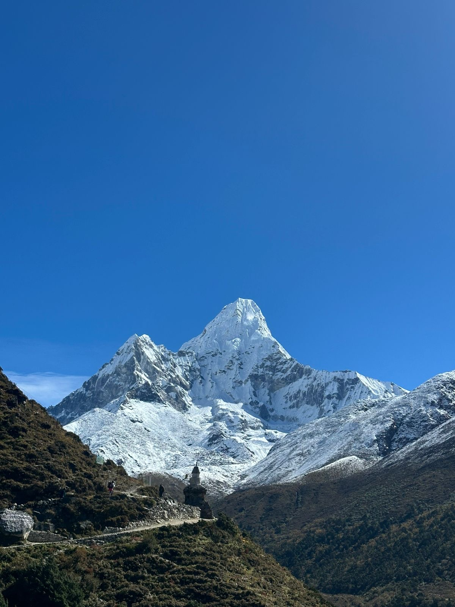
Day 2: Kathmandu valley sightseeing and trek preparation
Kathmandu
Accommodation: Hotel
Activity: Sightseeing and trek preparation
Day two combines Kathmandu Valley sightseeing with final preparation for the Everest Base Camp with Cho La Pass Trek. It is the final full day before leaving the Kathmandu Valley for the Everest region and provides time for both cultural exploration and practical preparation.
Kathmandu is one of Nepal's principal cultural centers, and the valley offers an introduction to the country's history, architecture and religious traditions before you travel into the Himalayas. Depending on the day's arrangements, sightseeing may include important cultural and religious landmarks, historic areas and traditional parts of the valley.
This cultural introduction is particularly relevant to the trekking route because the Everest region has a strong Buddhist heritage. As you travel through the Khumbu, you will see prayer flags, mani walls, chortens, monasteries and other expressions of Himalayan Buddhist culture. The communities you visit on the trek have their own traditions and ways of life, and the cultural environment becomes increasingly visible as the route moves farther into the mountains.
The rest of the day is dedicated to preparation.
You can use this time to check every item of trekking equipment before leaving for Lukla. Your clothing should be organized according to the temperature range expected at different elevations, with warm layers readily available for the colder sections of the route. Footwear should already be comfortable and broken in, since the trek includes long walking days over uneven terrain.
It is also useful to separate the things you will carry in your daypack from the equipment that will remain in your main trekking baggage. Frequently needed items such as water, snacks, sunglasses, sunscreen, a light layer, personal medication and documents should remain easily accessible.
The Cho La section requires particular preparation. Although the majority of the route consists of established Himalayan trekking trails, the crossing of Cho La can involve steep, rocky, snowy or icy sections depending on current conditions. Your guide can explain the equipment requirements and expected conditions before the trek begins.
The preparation day also provides an opportunity to review the itinerary in detail. You can confirm the daily destinations, accommodation arrangements, acclimatization stops and approximate walking times. Understanding the progression of the trek helps you pace yourself from the first trekking day instead of attempting to walk too quickly in the early stages.
The mountain flight to Lukla is also an important logistical point. Flights are subject to operating conditions and weather, so your trekking team will confirm the latest departure arrangements as you approach the mountain journey.
Use the evening to rest rather than filling the schedule with unnecessary activity. The next morning begins the trekking section of the package, and from Lukla onward the journey follows a continuous progression through the Khumbu.
By the end of this preparation day, your equipment should be organized, your trekking baggage should be ready and you should have a clear understanding of the route ahead. The following stage is no longer a city-based experience. It is the beginning of the walk toward Everest.
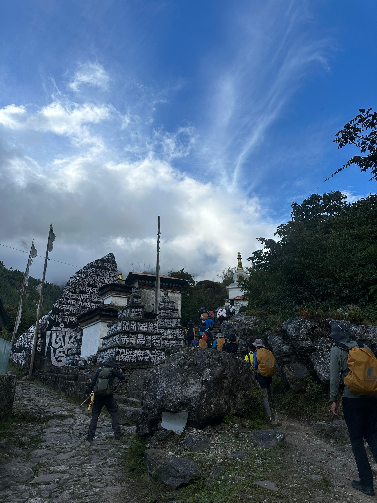
Day 3: Fly to Lukla and trek to Phakding
Altitude: Lukla 2,850 m / 9,350 ft; Phakding 2,650 m / 8,694 ft • 7.5 km / 4.6 miles
Duration: Approximately 3 hours
Distance: 7.5 km / 4.6 miles
Accommodation: Teahouse
The mountain journey begins with a flight from Kathmandu to Lukla, the principal air gateway for trekkers traveling into the Everest region. The short mountain flight marks a dramatic change in scenery as the dense urban environment of Kathmandu gives way to hills, valleys and Himalayan terrain.
After arriving in Lukla at approximately 2,850 meters, the trekking team organizes the baggage and prepares for the first walking section. Although Lukla is already significantly higher than Kathmandu, the day's trek is deliberately moderate. The objective is to begin walking without putting unnecessary physical stress on the body immediately after the flight.
The trail from Lukla to Phakding covers approximately 7.5 kilometers and generally takes around three hours. The route descends gradually toward the Dudh Koshi valley and passes through the characteristic landscape of the lower Khumbu.
The first walking stages provide an introduction to Himalayan trail conditions. You will encounter stone paths, mountain slopes, local homes, farmland, forested sections and suspension bridges crossing mountain rivers. The Dudh Koshi remains an important geographical feature as the route progresses toward the interior of the Khumbu.
Compared with the higher sections of the trek, the landscape around Lukla and Phakding is relatively green. Trees, cultivated terraces and vegetation still dominate many parts of the route. You will also begin to notice the religious and cultural features that characterize the Everest region, including prayer flags, mani stones and small Buddhist shrines along the trail.
The trek to Phakding is not intended to be a race. A comfortable and consistent walking rhythm is preferable, especially because the following days involve longer distances and more significant elevation gain.
Phakding is an established trekking settlement and provides your first overnight experience in the teahouse system used throughout much of the journey. Accommodation is simple and practical, designed around the needs of trekkers traveling through a remote mountain environment.
The evening is a good opportunity to settle into the daily routine that will continue for the rest of the trekking section. Meals are generally taken in a communal dining area, and trekkers often spend the evening discussing the day's route, checking the following day's weather and preparing their equipment for the morning.
Your first night in the Khumbu also represents an important transition. The trek has now moved beyond ordinary road-based travel and into an area where walking is the primary means of transportation between settlements.
The lower Khumbu trail introduces you gradually to the terrain, pace and atmosphere of the region. You are not yet at the high elevations where the greatest physical demands occur, but you are already beginning the process of adapting to mountain travel.
From Phakding, the route continues deeper toward Namche Bazaar. The following day is longer and includes a more substantial climb, eventually bringing you to the main commercial and acclimatization center of the Khumbu.
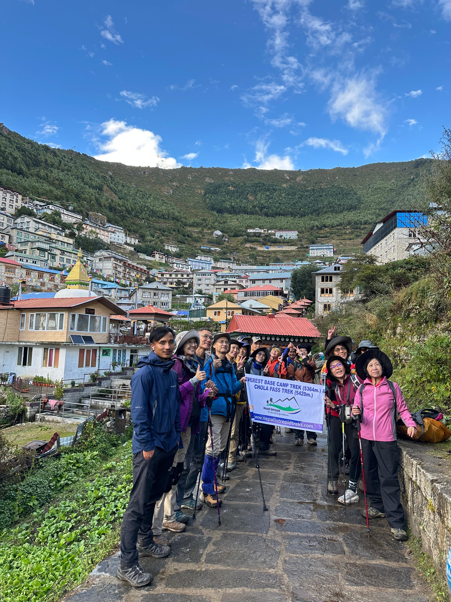
Day 4: Trek from Phakding to Namche Bazaar
Altitude: 3,443 m / 11,296 ft • 12 km / 7.4 miles
Duration: Approximately 6 hours
Distance: 12 km / 7.4 miles
Accommodation: Teahouse
Today you continue from Phakding to Namche Bazaar, covering approximately 12 kilometers in around six hours. This is the first major trekking stage of the itinerary and one of the key transitions into the higher Everest region.
The route continues along the Dudh Koshi valley before gradually moving deeper into Sagarmatha National Park and the central Khumbu. The walking surface changes repeatedly as the trail moves through forests, settlements, river crossings and areas of stone steps.
Suspension bridges are one of the recognizable features of the route. Crossing these bridges above mountain rivers adds another dimension to the day's trek, while the surrounding hills become increasingly steep and dramatic.
The trail is not a constant uphill climb. There are sections of descent and flatter walking before the final sustained ascent toward Namche Bazaar. This variation means that pacing is important. Rather than attempting to complete the first half of the day too quickly, maintaining a controlled rhythm helps preserve energy for the final climb.
As you approach Namche, the landscape changes noticeably. The settlement sits in a natural amphitheater at approximately 3,443 meters and is surrounded by steep Himalayan slopes.
The final climb into Namche is one of the more demanding sections of the early itinerary. The elevation gain is significant, and you may begin to notice the effects of thinner air compared with the lower villages.
Reaching Namche is therefore more than arriving at the next overnight stop. It marks the point where the trek begins to take on a stronger high-altitude character.
Namche Bazaar is the principal commercial center of the Khumbu and provides a range of services for trekkers and residents. The settlement contains lodges, restaurants, shops and other facilities, making it one of the most developed stops you will encounter before entering the higher valleys.
After arriving, you can check into the teahouse and allow your body to recover from the day's climb.
The following day is dedicated to acclimatization, which is particularly important after the elevation gain from Phakding. Rather than moving immediately to a higher sleeping altitude, you will remain in Namche and undertake a day hike to higher ground.
This gradual approach helps you prepare for the increasingly elevated stages toward Tengboche, Dingboche, Lobuche and eventually Everest Base Camp.
The first nights in the Khumbu also provide an opportunity to become familiar with the practical aspects of teahouse trekking. Rooms are generally simple, the dining area becomes a social space in the evenings and temperatures become more noticeable as elevation increases.
You should keep your routine focused on rest, hydration, food and preparation for the next day.
The experience on the trail is already changing from the lower Khumbu. The villages are surrounded by higher peaks, the terrain is increasingly rugged and the physical demands begin to become more evident.
Namche will serve as an important base before you continue toward the upper Khumbu. The next day allows you to explore the area while preparing your body for the higher elevations ahead.
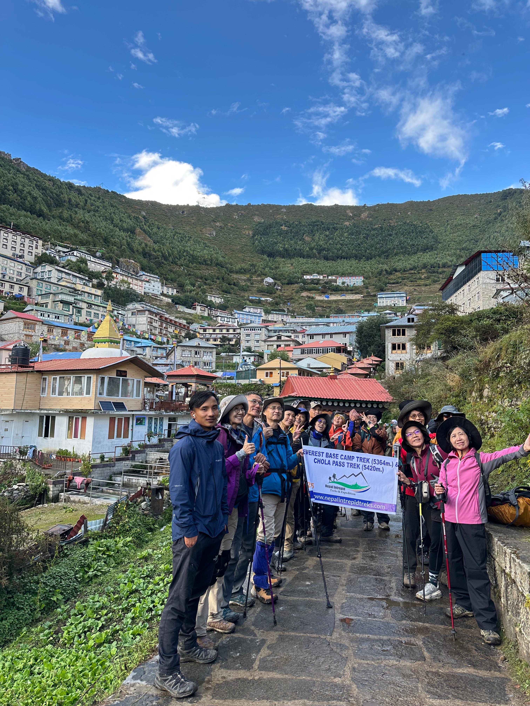
Day 5: Acclimatization day in Namche Bazaar and hike to Everest View Hotel
Highest Hiking Point: Everest View Hotel, approximately 3,880 m / 12,730 ft • 7 km / 4.3 miles
Duration: Approximately 4 hours
Distance: 7 km / 4.3 miles
Accommodation: Teahouse
Day five is the first dedicated acclimatization day of the Everest Base Camp with Cho La Pass Trek. You remain overnight at Namche Bazaar while taking a higher-elevation hike toward the Everest View Hotel and surrounding viewpoints.
An acclimatization day is not simply a rest day. The purpose is to allow your body additional time to adjust to the increased elevation while still engaging in controlled physical activity. The hike takes you higher during the day and returns you to Namche for the night's accommodation.
The route toward Everest View Hotel climbs above Namche through mountain terrain and provides an opportunity to experience the surrounding Himalayan landscape from a higher perspective.
As you gain elevation, the panorama opens across the Khumbu. On clear days, views toward Everest and Ama Dablam contribute to one of the memorable mountain experiences of the early trek.
The hike is also an opportunity to walk without the full demands of a long transfer between villages. You can focus on your pace, breathing and physical response to the elevation without needing to cover a major point-to-point distance.
Approximately seven kilometers of walking over around four hours provides enough activity to keep the body moving while leaving time to return to Namche and rest.
Your guide can use this day to monitor how you are responding to the increasing elevation. You can also use it to make any small adjustments to your clothing system, daypack organization or hydration routine.
Acclimatization becomes increasingly important as the route rises. The trek eventually reaches altitudes above 5,000 meters, so gradual progression is a core part of the itinerary.
The overnight return to Namche is important. After reaching the higher viewpoint, you descend again and sleep at the same altitude as the previous night rather than immediately moving your sleeping elevation higher.
This pattern gives you an early opportunity to experience the benefits of climbing higher during the day while maintaining a more gradual sleeping-altitude progression.
Namche itself is also worth experiencing during the acclimatization day. The town's compact network of shops, lodges and restaurants provides one of the last places on the route where a wider range of supplies and services is available.
You can use the afternoon to rest, enjoy the surroundings and prepare for the following stage.
The next day, you leave Namche and continue toward Tengboche. From there, the itinerary enters the upper Khumbu and eventually reaches Dingboche, where a second and higher acclimatization day is planned.
By the end of Day 5, the purpose is not simply to have visited a viewpoint. It is to begin preparing your body for a sustained progression toward much higher elevations.
The combination of controlled walking, daytime elevation gain and overnight return to Namche makes this an important part of the overall itinerary.
Day 6: Trek from Namche Bazaar to Tengboche
Altitude: Tengboche 3,860 m / 12,664 ft • 10 km / 6.2 miles
Duration: Approximately 6 hours
Distance: 10 km / 6.2 miles
Accommodation: Teahouse
Today the trail leaves Namche Bazaar and continues toward Tengboche, covering approximately 10 kilometers over around six hours. The route gradually enters the higher Khumbu and brings a noticeable change in both scenery and mountain atmosphere.
The trail initially traverses the slopes above the valley, offering wide views across the surrounding mountains. Rather than immediately climbing steeply, sections of the route follow the contours of the landscape, allowing you to maintain a steady rhythm.
The surrounding mountains become increasingly prominent as you continue. This is one of the sections where the physical landscape and the cultural landscape of the Khumbu begin to come together more clearly.
Along the route you may encounter Buddhist prayer flags, mani walls, chortens and other features associated with Sherpa communities.
The journey toward Tengboche also provides a gradual introduction to the higher elevations that will define the remainder of the trek. Although the day's destination is still below 4,000 meters, the air is noticeably thinner than in Namche, and pacing remains important.
The trail includes descents as well as climbs. One of the characteristics of the Khumbu route is that an apparent descent often leads into another substantial ascent, so conserving energy becomes more important than walking quickly on individual sections.
Tengboche is one of the most important cultural and scenic stops along the Everest route.
The settlement is known for Tengboche Monastery, one of the major Buddhist institutions in the Everest region. The monastery occupies a striking position within the mountain landscape and provides an opportunity to experience an important aspect of Sherpa cultural and religious life.
Depending on arrival time and local conditions, you may have an opportunity to explore the surrounding area and observe the mountain environment around Tengboche.
The views from the area are particularly impressive, with mountains rising sharply around the valley and the settlement itself surrounded by forests and open Himalayan slopes.
Once you reach the teahouse, the rest of the afternoon can be used for recovery and preparation for the following day's longer climb toward Dingboche.
At this point in the journey, maintaining nutrition and hydration becomes increasingly important. The body is using more energy while simultaneously adapting to thinner air, so regular meals and controlled pacing are central to the daily routine.
The overnight stay at Tengboche also marks the beginning of the transition from the lower alpine environment toward the more open, treeless landscapes of the upper Khumbu.
The following day takes you to Dingboche at approximately 4,450 meters. The landscape becomes progressively more rugged, and the importance of acclimatization becomes even greater.
Today's trek therefore serves as both a scenic section of the journey and another controlled stage in the elevation progression toward Everest Base Camp and Cho La Pass.
Day 7: Trek from Tengboche to Dingboche
Altitude: Dingboche 4,450 m / 14,600 ft • 12 km / 7.4 miles
Duration: Approximately 6 hours
Distance: 12 km / 7.4 miles
Accommodation: Teahouse
The route continues from Tengboche to Dingboche, covering approximately 12 kilometers in around six hours. This stage takes you significantly deeper into the upper Khumbu and brings you to one of the most important acclimatization points on the trek.
The trail begins by descending through the area around Tengboche and continuing toward lower settlements before climbing again along the upper valley. The landscape changes gradually as the route moves farther above the tree line.
Vegetation becomes increasingly sparse, and the wide mountain slopes, stone walls and open valleys become more dominant. The mountains appear increasingly close as the trail enters a more distinctly alpine environment.
The route passes through traditional villages and mountain farmland before reaching the larger settlement area of Dingboche.
Dingboche is situated at approximately 4,450 meters and is widely used as an acclimatization stop by trekkers heading toward Everest Base Camp and other high-altitude routes.
Arriving here is an important milestone because the trek is now operating at an elevation where altitude becomes a much more significant factor. The pace needs to remain controlled, and the body should be given sufficient time to adapt before moving significantly higher.
The day's approximately six hours of walking should therefore be treated as a steady progression rather than a race to the destination.
The landscape around Dingboche is broad and open compared with the forested sections lower down. Stone-walled fields, mountain slopes and high peaks surround the settlement, creating an expansive Himalayan setting.
Once you arrive, you can check into the teahouse, eat a substantial meal and rest.
The following day is another acclimatization day, and this time the daytime hike reaches substantially higher terrain. The itinerary takes you toward Nangkartshang Hill, providing a controlled opportunity to gain additional elevation during the day before returning to Dingboche for the night.
This higher acclimatization day is particularly useful because the route after Dingboche moves quickly toward Lobuche, Gorak Shep and Everest Base Camp.
At this stage, personal pacing becomes increasingly important. Walking more slowly than you might at low altitude is normal. Shorter steps, regular breaks and controlled breathing allow you to conserve energy while your body adjusts to reduced oxygen availability.
The overnight stay in Dingboche is also one of the major practical points of the itinerary. The next days move into a significantly harsher environment, with higher elevations and longer distances.
The route from Dingboche toward Lobuche begins to expose you to the full character of the high Khumbu. The landscape becomes more barren, the temperatures can drop sharply and the effects of elevation are more noticeable.
Day 7 therefore prepares you not only geographically but physically for the most demanding portion of the Everest Base Camp section.
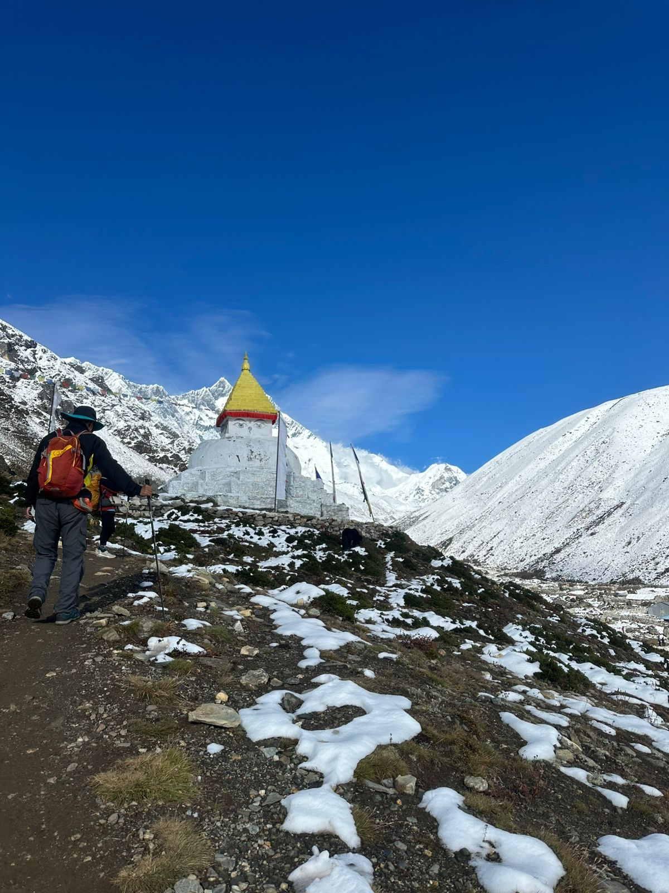
Day 8: Acclimatization day and hike to Nangkartshang Hill
Highest Hiking Point: Nangkartshang Hill, approximately 5,100 m / 16,732 ft • 7.4 km / 4.5 miles
Duration: Approximately 4–5 hours
Distance: 7.4 km / 4.5 miles
Accommodation: Teahouse
The second dedicated acclimatization day takes place in Dingboche, with a hike toward Nangkartshang Hill at approximately 5,100 meters. This is an important stage in the itinerary because it introduces your body to a significantly higher elevation before you continue toward Lobuche, Gorak Shep and Everest Base Camp.
The principle remains the same as the earlier acclimatization day in Namche: gain elevation during the day, then return to Dingboche to sleep at the same lower altitude.
The route toward Nangkartshang climbs above Dingboche and provides a broad perspective across the surrounding upper Khumbu. The terrain is increasingly rocky and open, with little of the dense vegetation that characterized the lower portions of the trek.
As you climb, the effects of altitude become increasingly noticeable. The purpose is not to reach the highest point as quickly as possible. The ascent should be measured and controlled, allowing the guide to monitor your pace and physical response.
The hike covers approximately 7.4 kilometers and takes around four to five hours. This gives enough time to gain substantial daytime elevation without turning the acclimatization day into an unnecessarily exhausting expedition.
The viewpoint around Nangkartshang offers wide mountain scenery. You can see the surrounding peaks and valleys from above Dingboche, gaining a clearer understanding of the terrain through which the trekking route will continue.
The hike also allows you to test how your clothing, footwear, hydration system and daypack feel at higher altitude.
After reaching the planned high point, you descend back toward Dingboche. The descent is just as important as the ascent because it returns you to the lower sleeping altitude and conserves energy for the next stages.
Back at the teahouse, the remainder of the day should be dedicated to rest, food, hydration and preparation.
Your next two trekking days are among the most significant of the itinerary. Day 9 takes you to Lobuche, followed by the long Day 10 journey toward Gorak Shep and Everest Base Camp.
The acclimatization work completed in Dingboche is therefore directly connected to the demands ahead.
At this stage, it is normal for walking to feel slower than it did in the lower valleys. The altitude affects the amount of oxygen available to the body, and maintaining a measured pace is more useful than trying to maintain the same walking speed used at lower elevations.
The scenery also becomes more stark and dramatic. Open valleys, rocky slopes, glaciers and high mountain walls replace much of the forested environment experienced during the first week.
Nangkartshang therefore represents more than a viewpoint. It is a strategic acclimatization stage within the overall itinerary.
After returning to Dingboche, you spend another night at the same altitude before moving higher. The following morning, the route heads toward Lobuche, bringing you closer to the Everest Base Camp area and the main high-altitude section of the trek.
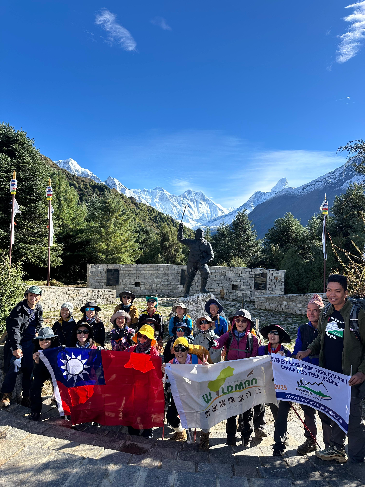
Day 9: Trek from Dingboche to Lobuche
Altitude: Lobuche 4,910 m / 16,109 ft • 8 km / 4.9 miles
Duration: Approximately 5–6 hours
Distance: 8 km / 4.9 miles
Accommodation: Teahouse
Today the trek continues from Dingboche to Lobuche, covering approximately eight kilometers over five to six hours. Although the distance is shorter than some of the earlier stages, the higher elevation makes this an important and physically demanding day.
The trail leaves Dingboche and continues into the increasingly rugged upper Khumbu. The environment is now unmistakably alpine, with sparse vegetation and wide mountain landscapes replacing the greener valleys below.
The route follows the valley toward the higher settlements, gradually gaining elevation. As you climb, the surrounding peaks dominate the horizon and the sense of remoteness increases.
One of the notable features of this part of the journey is the changing character of the trail. Stone and rocky surfaces become more common, and the landscape is increasingly shaped by glaciers and high mountain geology.
The route eventually reaches the Thukla area before continuing toward the higher valley and Lobuche.
The climb beyond Thukla can feel demanding because of the elevation. Your body is already operating in a low-oxygen environment, so even a moderate incline can require more effort than it would at lower altitudes.
Maintaining a slow, consistent pace is therefore essential.
As you continue, you encounter the Everest region's memorial area dedicated to climbers and mountaineers who have lost their lives in the Himalayas. The memorials stand within the rugged landscape and provide a quiet reminder of the challenges associated with the high mountains.
Lobuche is situated at approximately 4,910 meters and serves as an important overnight stop before the Everest Base Camp section.
Once you arrive, the main priority is recovery.
The following day is significantly longer, requiring the journey from Lobuche to Gorak Shep, the continuation to Everest Base Camp and the return to Gorak Shep. This means that conserving energy today is important.
At Lobuche, the conditions can also feel substantially colder than at lower elevations. Temperatures often drop quickly after sunset, so warm layers should remain easily accessible.
The teahouse environment becomes simpler as you move higher into the Khumbu. Services can be more limited, and the mountain environment becomes more dominant.
The night at Lobuche therefore represents one of the final stages before entering the Everest Base Camp area.
The trek is now approaching one of its principal objectives. After several days of gradual elevation gain, acclimatization and progressively changing terrain, you are close to Gorak Shep and the trail leading toward Everest Base Camp.
The following morning begins an early and demanding stage. You will walk from Lobuche to Gorak Shep, continue to Everest Base Camp and then return to Gorak Shep for the night.
By maintaining a controlled pace and following the acclimatization strategy built into the itinerary, you enter the Everest Base Camp section with your body already exposed to several days of high-elevation trekking.
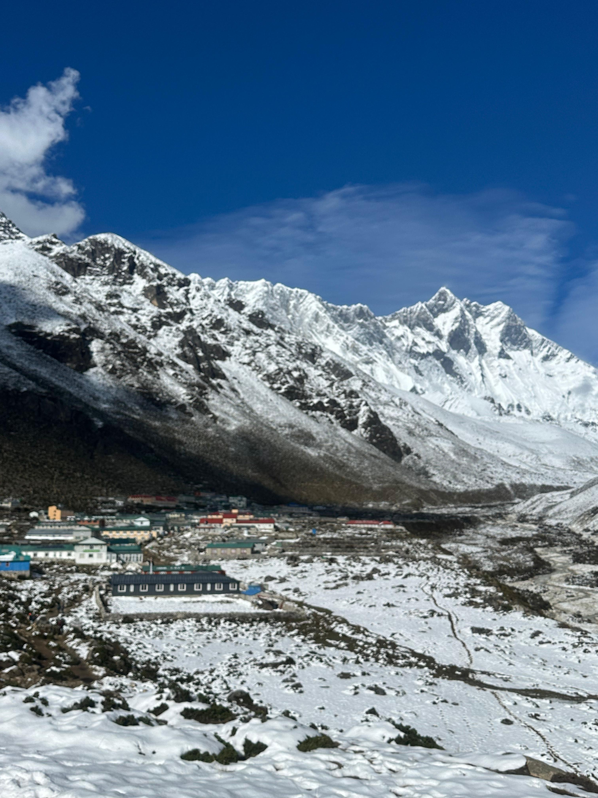
Day 10: Lobuche to Gorak Shep, Everest Base Camp and back to Gorak Shep
Altitude: Gorak Shep 5,180 m / 16,995 ft; Everest Base Camp: 5,364 m / 17,598 ft • Approximately 11.5 km / 7.1 miles
Duration: Approximately 7–8 hours
Distance: Approximately 11.5 km / 7.1 miles
Accommodation: Teahouse
Today is one of the central days of the Everest Base Camp with Cho La Pass Trek. The route takes you from Lobuche to Gorak Shep, continues onward to Everest Base Camp at approximately 5,364 meters, and then returns to Gorak Shep for the night's accommodation.
The total walking distance is approximately 11.5 kilometers, with the full day taking around seven to eight hours.
The day begins by continuing through the high Khumbu toward Gorak Shep. The terrain becomes increasingly rugged as you enter the Everest Base Camp area, with rocky pathways, glacial landscapes and dramatic mountain surroundings.
The elevation is now substantial, and the walking pace naturally becomes slower.
Gorak Shep sits at approximately 5,180 meters and is one of the highest overnight settlements along the standard Everest Base Camp route. Reaching Gorak Shep is already an important milestone, but the day's main objective lies farther along the trail.
After a suitable break, the trek continues toward Everest Base Camp.
The trail follows the rugged landscape associated with the Khumbu Glacier. The route can feel physically demanding because you are now walking at an altitude where even moderate terrain requires significantly more effort.
The surrounding landscape provides a constant reminder of the scale of the Everest region. Glacial formations, rocky slopes and towering Himalayan peaks create a dramatic setting as you move toward the base camp area.
Reaching Everest Base Camp is the principal objective of this section of the trek.
The base camp area represents the endpoint used by climbers preparing for expeditions toward the summit of Mount Everest, although the route taken by trekking visitors does not itself reach the summit.
Once you arrive, you have time to appreciate the surrounding landscape and experience the destination you have been approaching since leaving Lukla.
The amount of time spent at the base camp area depends on the group pace, conditions and the practical requirements of the return journey.
After completing the visit, the route turns back toward Gorak Shep.
The return journey can feel demanding because you are already tired from the day's walking and remain at a very high elevation. Maintaining a steady pace and taking appropriate breaks is therefore important.
Once you return to Gorak Shep, the focus shifts to recovery. Eating a full meal, hydrating and resting are essential before the following morning's climb toward Kala Patthar.
Day 10 therefore combines one of the most important destinations of the entire journey with one of the longer and higher walking days.
The itinerary does not finish at Everest Base Camp. One of its defining characteristics is that the route continues onward to Kala Patthar, Dzongla and Cho La Pass before entering the Gokyo Valley.
This creates a broader Himalayan journey rather than a simple out-and-back EBC experience.
Your overnight stay at Gorak Shep gives you a short recovery period before an early start the following day. Day 11 brings a high-altitude climb to Kala Patthar followed by the trek toward Dzongla, preparing you for the Cho La crossing that comes next.
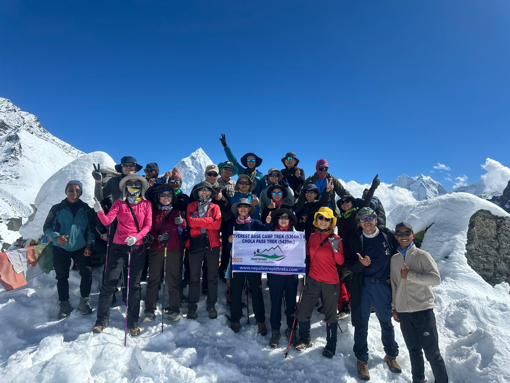
Day 11: Climb Kala Patthar and trek to Dzongla
Kala Patthar: Approximately 5,545 m / 18,192 ft; Dzongla: Approximately 4,830 m / 15,846 ft • Approximately 13.7 km / 8.5 miles
Duration: Approximately 8 hours
Distance: Approximately 13.7 km / 8.5 miles
Accommodation: Teahouse
The itinerary continues with an early climb to Kala Patthar, followed by the trek toward Dzongla. With approximately 13.7 kilometers of walking and around eight hours on the trail, this is another major day in the high-altitude section of the journey.
The early start is planned around the Kala Patthar climb. Reaching the viewpoint in the morning provides the opportunity to experience the surrounding mountain panorama under morning light.
Kala Patthar rises to approximately 5,545 meters and is one of the highest points reached on the trekking route.
The climb from Gorak Shep is relatively steep and can feel demanding because of the altitude. Walking slowly and taking regular pauses allows you to manage the ascent without unnecessary energy expenditure.
As you climb, the view across the upper Khumbu opens progressively. Everest and the surrounding peaks dominate the panorama, while the rugged landscape around the Khumbu Glacier lies below.
Reaching the summit area of Kala Patthar provides one of the most significant viewpoints of the trek.
After spending time at the viewpoint, you descend toward Gorak Shep and continue in the direction of Dzongla.
The route now changes direction from the main Everest Base Camp corridor. Instead of returning through the standard trail toward Lobuche and Dingboche, the itinerary moves toward the remote settlement of Dzongla and prepares for the Cho La crossing.
Dzongla is situated at approximately 4,830 meters and occupies a remote position surrounded by high mountain terrain.
The trail toward Dzongla introduces a different character to the trek. The route is less focused on large trekking settlements and more on the isolated landscape of the upper valleys.
The descent from Kala Patthar does not mean that the day becomes easy. The total walking distance remains substantial, and you are already carrying fatigue from the previous days at altitude.
Conserving energy is therefore crucial.
Dzongla itself provides an important overnight stop before the most demanding pass-crossing day of the itinerary.
The overnight at Dzongla is also strategically positioned. The following day, the trail crosses Cho La Pass at approximately 5,420 meters, making Day 12 one of the most challenging stages of the entire trek.
This means that Day 11 should be approached as a preparation day as much as a scenic day.
Your equipment for the pass crossing should be checked in advance. Warm clothing should be accessible, and any gear required for potentially snowy or icy conditions should be ready.
The guide will assess the route conditions and the weather before the crossing.
The experience of standing at Kala Patthar and later arriving in Dzongla makes this day especially varied. You begin with one of the most famous viewpoints in the Everest region and end in a remote Himalayan settlement preparing for a high mountain pass.
The combination of altitude, distance, changing terrain and the transition away from the main EBC trail gives the day a distinctly adventurous character.
After spending the night at Dzongla, the route heads toward Cho La Pass the following morning before descending toward Dragnak or Thangna.
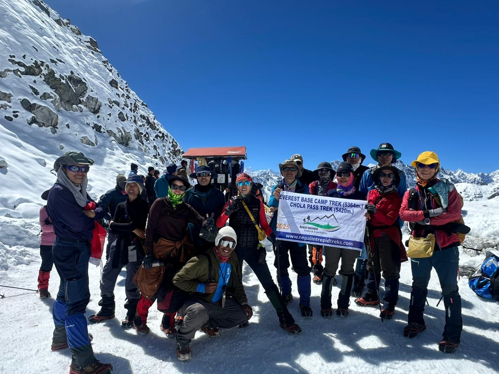
Day 12: Dzongla to Thangna via Cho La Pass
Cho La Pass: Approximately 5,420 m / 17,782 ft; Dragnak/Thangna: Approximately 4,700 m / 15,420 ft • Approximately 10.8 km / 6.7 miles
Duration: Approximately 7 hours
Distance: Approximately 10.8 km / 6.7 miles
Accommodation: Teahouse
Day 12 is the defining adventure of the Everest Base Camp with Cho La Pass Trek, taking you from Dzongla across Cho La Pass and down toward Dragnak, also known as Thangna.
The route covers approximately 10.8 kilometers and generally takes around seven hours, but the actual pace can vary considerably according to weather, snow conditions, trail conditions and the performance of the trekking group.
The day begins early because the Cho La crossing requires enough daylight and sufficient time to respond to changing mountain conditions.
From Dzongla, the route gradually approaches the high terrain leading toward Cho La. The landscape is increasingly rugged and exposed, with fewer signs of permanent settlement and more direct exposure to the surrounding mountain environment.
The approach involves steep sections, and the trail can become more demanding as you gain elevation.
At approximately 5,420 meters, Cho La Pass is the highest point of the crossing.
The pass is not simply a viewpoint reached by an ordinary uphill trail. Depending on the season and current conditions, sections can involve loose rock, snow and ice. Conditions can change quickly at this elevation, so the crossing should always be undertaken according to the assessment of the trekking team.
The ascent requires patience.
At high altitude, even relatively short climbs can take more time than expected. The combination of reduced oxygen, steep terrain and cold conditions makes an early and controlled start important.
As you approach the pass, the surrounding landscape becomes increasingly expansive. The high mountains and glacial terrain create a dramatic environment, and the sense of remoteness is significantly greater than along the lower Khumbu trail.
Once you reach Cho La Pass, the crossing itself becomes the key moment of the day.
The descent on the opposite side is also a serious part of the route. Downhill terrain can be physically demanding, particularly where loose rock, snow or ice is present.
The trekking team manages the pace according to conditions, with careful movement through more technical sections.
After crossing the pass, the route continues downward toward Dragnak/Thangna on the Gokyo side.
The descent provides a significant change in elevation and begins to bring the journey into the next major geographical section of the itinerary.
The high-pass environment gradually gives way to a broader glacial valley landscape as you move toward Thangna.
Arriving at the teahouse provides an opportunity to recover after one of the most demanding days of the entire package.
A full meal, hydration and rest become particularly important after Cho La.
The day's experience also demonstrates why this route is more demanding than the standard EBC trek. The package combines the physical challenge of Everest Base Camp and Kala Patthar with an additional high mountain crossing.
Cho La is also one of the sections most affected by mountain conditions. Weather, snowfall and trail safety can influence whether and how the crossing is completed.
For this reason, route flexibility is part of responsible high-altitude trekking. A fixed timetable should never take priority over safe travel conditions.
Once the group reaches Dragnak/Thangna, the hardest pass-crossing stage is complete. The following day is shorter and takes you farther into the Gokyo Valley toward Gokyo itself.
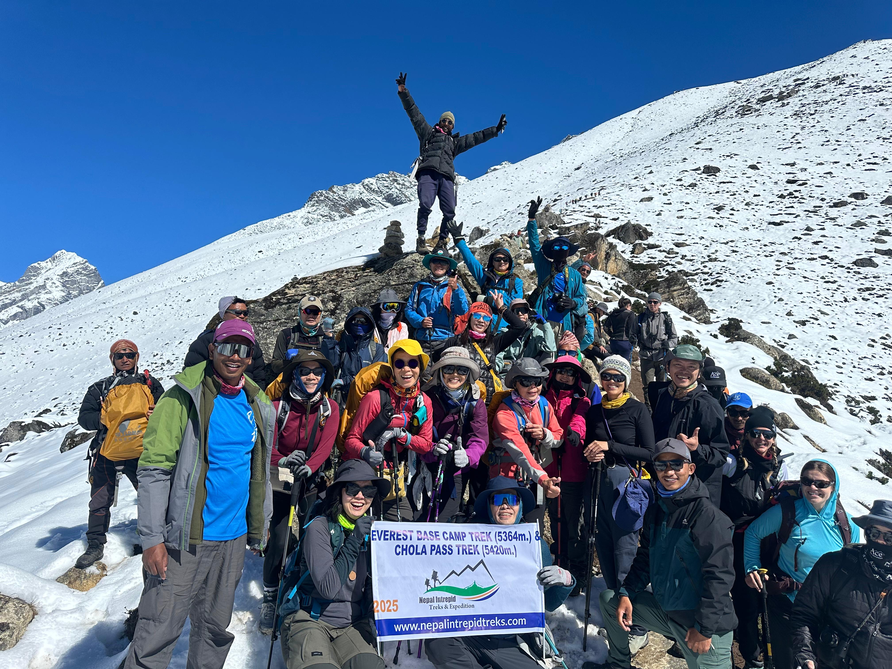
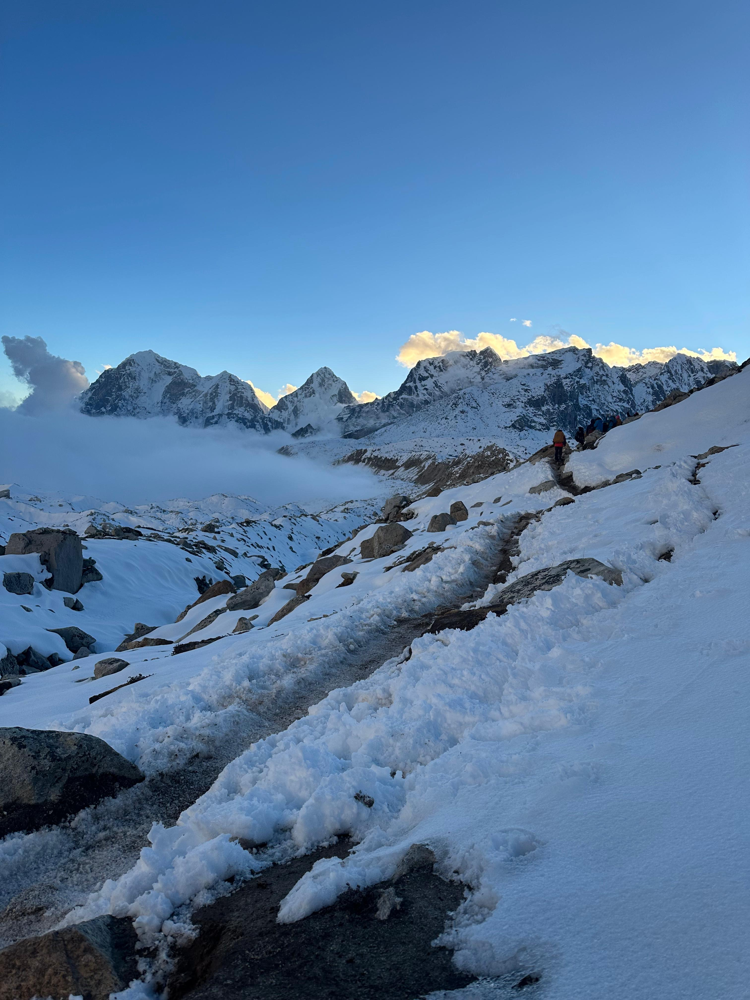
Day 13: Trek from Thangna to Gokyo
Altitude: Gokyo 4,750 m / 15,584 ft • 4.9 km / 3 miles
Duration: Approximately 3 hours
Distance: 4.9 km / 3 miles
Accommodation: Teahouse
After the demanding Cho La crossing, Day 13 provides a shorter trekking stage from Thangna to Gokyo. The route covers approximately 4.9 kilometers and takes around three hours, allowing you to enter the Gokyo Valley without adding another long trekking day immediately after the pass.
The morning begins in the high mountain environment around Thangna. After the previous day's Cho La crossing, your body may still be recovering from the combination of elevation, steep terrain and cold conditions.
For this reason, today's shorter distance is an important part of the overall rhythm of the itinerary.
The trail continues through rugged high-altitude terrain toward the Gokyo Valley. The landscape gradually changes as the route leaves the immediate Cho La environment and moves into the wider glacial basin around Gokyo.
The Gokyo region is known for its chain of high-altitude lakes and the surrounding mountain scenery.
As you approach Gokyo, the first major lake areas begin to form part of the landscape, creating a strong contrast with the rocky slopes and glaciers experienced around Cho La.
Gokyo Village sits at approximately 4,750 meters and is one of the key settlements on the Gokyo side of the Everest region.
Arrival in Gokyo marks another major milestone in the trek.
You have now crossed from the Everest Base Camp side of the region into one of the most important destinations of the Gokyo route.
The village is surrounded by mountains and glacial terrain, and the atmosphere can feel markedly different from Namche or the larger settlements of the main EBC trail.
The shorter walking day leaves more time for settling into the village and appreciating the surrounding environment.
The Gokyo Lakes are one of the defining natural attractions of the area. Their color and setting among the high mountains create a distinctive Himalayan landscape.
The area is also associated with the Ngozumpa Glacier, which forms another major geographical feature of the region.
Depending on the conditions and available time, you can explore the surroundings of the village and lakes while allowing yourself to recover from Cho La.
This is still a high-altitude environment, so the afternoon should not be treated as an unrestricted sightseeing period. Rest remains important, especially before the following day's ascent to Gokyo Ri.
The next day involves a hike to approximately 5,357 meters, so conserving energy and maintaining hydration are useful parts of preparation.
Gokyo also provides a different experience of Everest-region trekking because the route is no longer focused solely on the main Base Camp corridor.
The village and surrounding valley demonstrate another side of the Khumbu, where glacial lakes, high passes and mountain viewpoints form the primary attractions.
The transition from Thangna to Gokyo is therefore both physically and geographically significant.
You begin the day having completed Cho La and end it within one of the most spectacular high-altitude valleys of the Everest region.
The following morning, the itinerary turns to another major highlight: the ascent of Gokyo Ri.
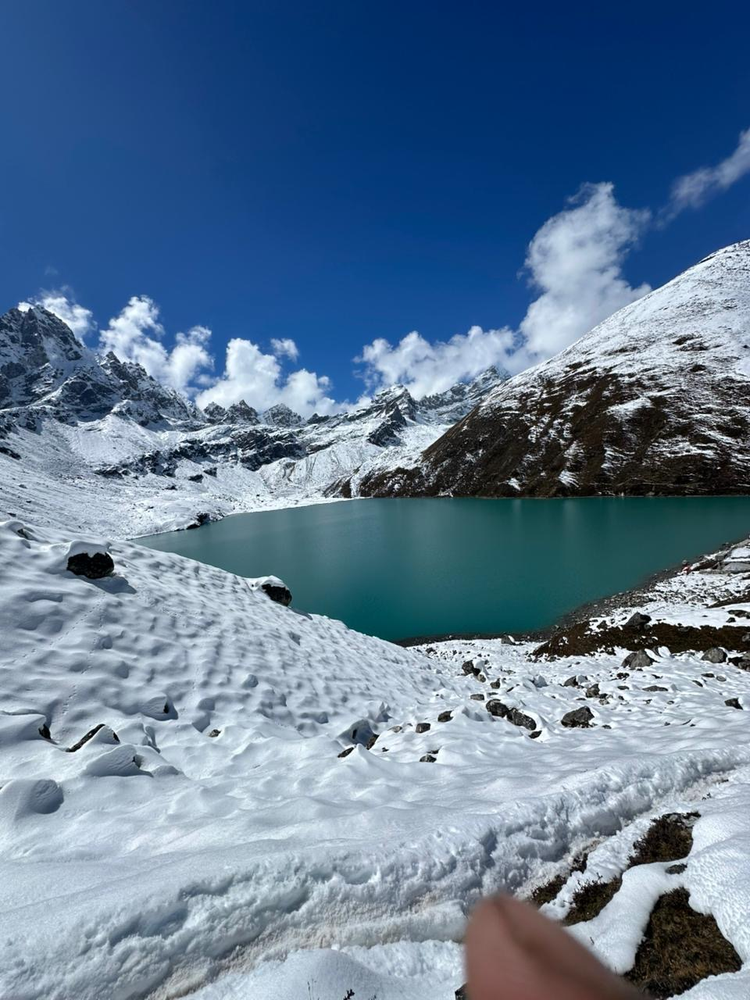
Day 14: Hike to Gokyo Ri
Gokyo Ri: Approximately 5,357 m / 17,575 ft • Approximately 4.6 km / 2.8 miles
Duration: Approximately 3–4 hours
Distance: Approximately 4.6 km / 2.8 miles
Accommodation: Teahouse in Gokyo
Day 14 is dedicated to the Gokyo Ri hike, one of the major viewpoint experiences of the Everest Base Camp with Cho La Pass Trek. From Gokyo, the route climbs to approximately 5,357 meters before returning to the village.
The total hiking distance is approximately 4.6 kilometers and the round-trip activity generally takes around three to four hours.
The day begins with an ascent above Gokyo. Although the distance is relatively short compared with the previous trekking days, the high altitude makes the climb physically demanding.
The route rises steadily from the village, and the thin air means that the pace needs to remain controlled.
The purpose of this climb is both experiential and geographical. From the higher viewpoint, the surrounding mountain landscape opens dramatically, allowing you to understand the scale and position of the Gokyo Valley within the wider Everest region.
Gokyo Ri provides panoramic mountain views that include some of the major peaks surrounding the Khumbu. Among the prominent mountains visible from the area are Everest, Cho Oyu, Lhotse and Makalu, together with numerous other peaks.
The viewpoint is also valuable because it provides a different perspective from Kala Patthar.
Earlier in the trek, Kala Patthar offered a high viewpoint from the Everest Base Camp side of the Khumbu. At Gokyo Ri, the perspective changes, allowing you to experience the mountains from the Gokyo side of the region.
The contrast makes the two viewpoints an important part of the combined itinerary.
The ascent should be approached steadily rather than quickly. At an elevation above 5,000 meters, the body's response to exertion can be very different from what you experience at sea level.
Regular pauses are normal, and the guide can adjust the pace according to the group.
After reaching the viewpoint, time can be spent taking in the mountain panorama and the surrounding glacial landscape before beginning the descent.
The return journey to Gokyo is much shorter than the ascent but still requires care on uneven terrain.
Once back in the village, the remainder of the day can be used for rest and relaxation.
This is an important recovery period because the following days begin the descent toward Dole and Namche Bazaar.
Descending to lower elevations generally feels physically easier for many trekkers, but the terrain can still involve steep downhill sections, so controlled walking remains important.
The Gokyo Ri day is one of the final high-altitude sightseeing stages of the itinerary and completes the combination of major viewpoints that define this trekking package.
You have now experienced Everest Base Camp, Kala Patthar, Cho La Pass, Gokyo Lakes and Gokyo Ri.
The route begins its return phase from Gokyo the next morning. The trail descends through the Gokyo Valley toward Dole, bringing you progressively back into lower elevations and greener mountain environments.
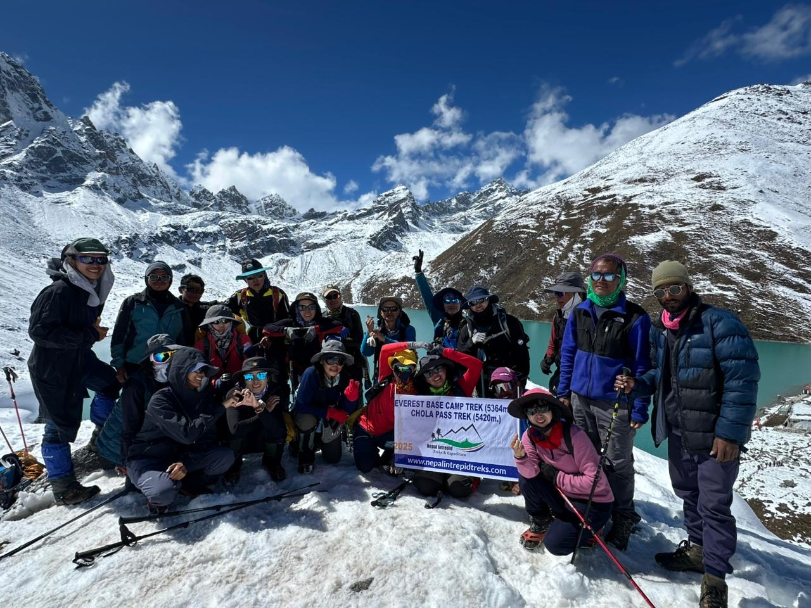
Day 15: Trek from Gokyo to Dole
Altitude: Dole 4,038 m / 13,248 ft • 11.9 km / 7.3 miles
Duration: Approximately 5 hours
Distance: 11.9 km / 7.3 miles
Accommodation: Teahouse
After completing the Gokyo Ri hike, the route begins its gradual descent from the Gokyo Valley toward Dole. Today's trek covers approximately 11.9 kilometers and takes around five hours, making it longer in distance than the previous two days but easier in terms of altitude progression.
Leaving Gokyo means beginning the final phase of the Everest Base Camp with Cho La Pass journey.
The trail descends through the Gokyo Valley and follows a route characterized by high mountain terrain, open slopes, alpine vegetation and changing views of the surrounding peaks.
As you lose elevation, the landscape begins to change.
The very high, barren environment around the Gokyo area gradually gives way to more vegetation. The air becomes denser compared with the highest stages, and the physical demands associated directly with extreme altitude begin to reduce.
However, the descent itself can be hard on the legs, particularly after several consecutive days of high-altitude trekking.
Walking downhill on rocky or uneven Himalayan trails requires controlled movement. Trekking poles can be useful for reducing strain and maintaining stability.
The route toward Dole passes through the characteristic scenery of the Gokyo side of the Khumbu. Alpine ridges and grazing areas appear along the trail, and the surrounding mountains remain visible as you descend.
Dole is situated at approximately 4,038 meters, significantly lower than Gokyo and the viewpoints visited in the previous days.
Reaching Dole represents an important step in returning toward the more developed parts of the Khumbu.
The village provides an overnight stop where you can rest after the day's walk and prepare for the continuation toward Namche Bazaar.
The descent also allows you to look back at the scale of the route completed.
Only a few days earlier, you were crossing Cho La at approximately 5,420 meters and approaching Everest Base Camp. Now the journey is moving steadily back toward the lower Khumbu.
Although the major high-altitude objectives are complete, the trek is not yet finished.
There are still two substantial walking stages before Lukla, including the trek from Dole to Namche and the long final trekking day from Namche to Lukla.
The return route provides a different perspective on landscapes that may have been approached from another direction earlier in the trek.
The trail becomes more familiar with the increasing presence of trees, lower elevations and established mountain settlements.
Dole also serves as a useful transition point between the high Gokyo environment and the more populated central Khumbu.
After checking into the teahouse, you can use the evening to rest, eat and prepare for the following day's descent toward Namche.
The lower altitude generally provides an opportunity for more comfortable rest after the demanding high-altitude sections.
You have completed the most technically demanding section of the package, including Cho La and the Gokyo highlands.
The remaining itinerary focuses on descending through the Khumbu, reconnecting with Namche Bazaar and eventually returning to Lukla.
This gradual descent provides a natural ending to the mountain portion of the route while allowing you to experience the changing landscape all over again.
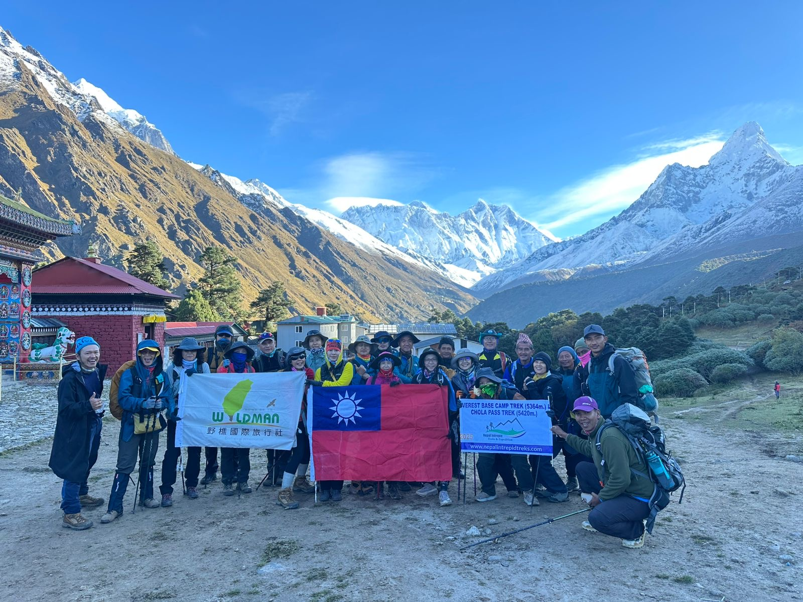
Day 16: Trek from Dole to Namche Bazaar
Altitude: Namche Bazaar 3,443 m / 11,296 ft • 11.5 km / 7.1 miles
Duration: Approximately 5–6 hours
Distance: 11.5 km / 7.1 miles
Accommodation: Teahouse
Today the route continues from Dole to Namche Bazaar, covering approximately 11.5 kilometers over five to six hours. The gradual loss of elevation brings you back toward the central Khumbu and the important mountain town where you previously completed your first acclimatization stage.
The trail from Dole winds through alpine terrain and gradually enters areas with greater vegetation as the elevation decreases.
The change is noticeable.
After spending several days surrounded by rocky high-altitude landscapes, glaciers and sparse vegetation, the return toward Namche introduces more trees, greener slopes and a stronger sense of the lower mountain environment.
The route includes both descents and sections of ascent, so although the overall direction is downhill, you should not expect a continuously descending trail.
The terrain remains typically Himalayan, with uneven surfaces, stone steps, narrow sections and occasional steep slopes.
The lower elevation makes the physical challenge different from the high-altitude sections. Breathing may feel easier, but the cumulative effect of more than two weeks of trekking can still be felt in the legs.
Maintaining a comfortable pace is therefore important.
The route eventually reconnects with the broader trail network leading toward Namche Bazaar.
Namche is once again a major milestone.
When you first reached Namche after Phakding, the settlement represented the gateway to the higher Khumbu. Now it serves as one of the final major stops before the trek returns to Lukla.
The atmosphere may feel noticeably different on the return journey. You have completed Everest Base Camp, crossed Cho La, explored Gokyo and climbed Gokyo Ri.
Returning to Namche therefore provides a natural point to reflect on the route while still focusing on the remaining logistics.
Once you arrive, you can check into the teahouse and spend the evening resting.
Because the following day is a long trekking stage toward Lukla, it is useful to prepare your belongings and make sure your main trekking luggage is organized.
Namche is also one of the best places along the route to make use of more developed services before returning to Lukla. Depending on the available facilities, you may be able to charge electronic devices, purchase essentials or contact people outside the trekking region.
The return to Namche also signals that the itinerary is moving out of the highest and most remote sections.
However, one substantial walking day still remains.
The following day takes you from Namche Bazaar to Lukla, covering approximately 19.5 kilometers in seven to eight hours. It is one of the longest walking days of the itinerary and effectively completes the trekking section.
That long final day makes today's rest and preparation important.
The journey from Dole to Namche therefore performs two roles. It is a substantial trekking stage in its own right, and it prepares you for the final descent through the lower Khumbu.
As the elevation continues to decrease, the environment becomes progressively greener and more settled.
The transition from the high Gokyo Valley back toward Namche provides one last opportunity to appreciate the changes in the Himalayan landscape that have defined the entire trek.
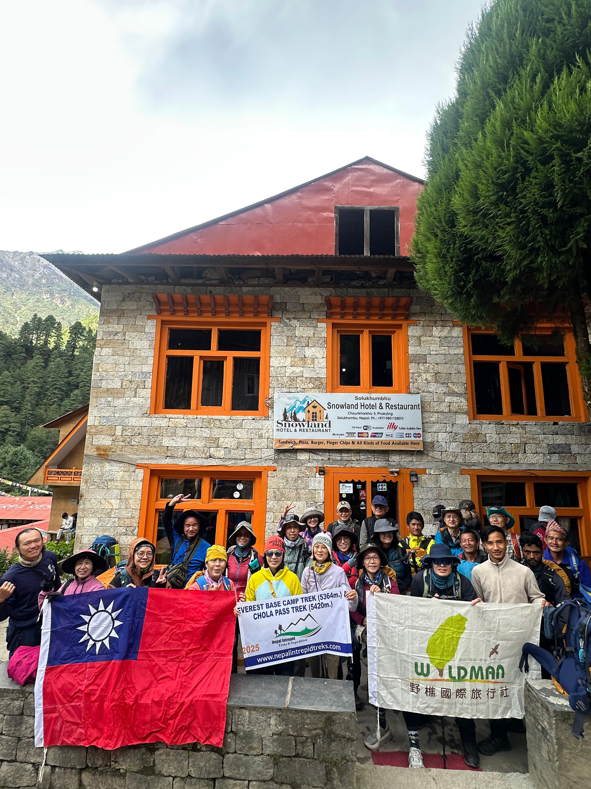
Day 17: Trek from Namche Bazaar to Lukla
Altitude: Lukla 2,850 m / 9,350 ft • 19.5 km / 12.1 miles
Duration: Approximately 7–8 hours
Distance: 19.5 km / 12.1 miles
Accommodation: Teahouse
Day 17 marks the final trekking day of the Everest Base Camp with Cho La Pass Trek, taking you from Namche Bazaar back to Lukla.
At approximately 19.5 kilometers, this is one of the longest walking days of the itinerary and generally takes around seven to eight hours.
The route retraces the lower Khumbu trail toward Lukla, passing through the familiar mountain environment between Namche and the lower Dudh Koshi valley.
Although the overall direction is downhill, the trail contains repeated ascents, descents, stone steps and uneven sections. The cumulative distance therefore makes this a substantial day even though you are descending toward lower elevation.
The route gradually leaves the higher mountain environment and returns toward more heavily vegetated areas.
Forested sections become more prominent, and the trail passes through settlements that you encountered during the opening days of the trek.
Crossing suspension bridges and following the river valley provide a familiar rhythm as the journey returns toward Lukla.
The lower altitude also provides a noticeable contrast with the previous sections around Gokyo, Cho La and Everest Base Camp.
At this point, you have already completed the major objectives of the package. The significance of today's trek is therefore different from the earlier climbing stages.
The focus is on completing the route comfortably, managing energy and reaching Lukla with enough time to rest before the mountain flight the following morning.
A long final trekking day is also useful because it provides a clear completion point for the walking portion of the package.
When you arrive in Lukla, the trekking section is officially complete.
Depending on the timing of your arrival, you can check into the accommodation and spend the evening relaxing after more than two weeks of mountain walking.
This is a good time to reorganize luggage for the flight back to Kathmandu.
Items that were necessary during the high-altitude trekking stages can be repacked, while documents, electronics and other travel essentials should be kept accessible for the following morning.
The evening in Lukla also creates an opportunity to enjoy the atmosphere of the mountain gateway one final time.
The settlement is closely connected with trekking and expedition travel, and reaching it at the end of the journey gives a clear sense that the high mountain section has come to an end.
At this point you have crossed a route containing some of the most demanding and iconic stages of the Everest region.
You have traveled from Lukla to Namche, entered the upper Khumbu, reached Everest Base Camp, climbed Kala Patthar, crossed Cho La and explored the Gokyo Valley before beginning the long return.
Today's 19.5-kilometer walk therefore represents the final link in the trekking circuit.
The following morning, the journey continues by air.
Because flights from Lukla are dependent on weather and operating conditions, the travel team confirms the departure arrangements for the next day according to the current situation.
The final night in Lukla is consequently both a practical overnight stop and the closing stage of the trekking experience.
After breakfast the next morning, you will leave the Everest region by air and return to Kathmandu.
Day 18: Fly from Lukla to Kathmandu
Altitude: Kathmandu 1,355 m / 4,445 ft
Duration: Approximately 30 minutes
Accommodation: Hotel
After completing the trekking route, Day 18 is dedicated to the flight from Lukla to Kathmandu.
The approximately 30-minute flight provides a rapid transition from the mountain environment of Lukla back to Nepal's capital city.
The flight itself is another distinct part of the Everest-region travel experience. After spending more than two weeks moving through the mountains primarily on foot, the short journey back to Kathmandu creates a sharp change in both scenery and pace.
As the aircraft leaves Lukla, the surrounding hills and mountain valleys gradually give way to the lower landscape of central Nepal.
The return to Kathmandu also marks the formal end of the trekking portion of the package.
Once you arrive in Kathmandu, you will be transferred to your hotel by private vehicle. After checking in, the remainder of the day is generally available for rest or personal activities.
Many trekkers use this time to recover from the accumulated physical demands of the journey.
After days at high altitude, returning to the lower elevation of Kathmandu allows your body to recover in a much more comfortable environment.
The city also provides access to the facilities and services that are limited in the mountain region.
Depending on the package arrangements and your schedule, you may have free time to explore nearby areas, purchase souvenirs or simply relax at the hotel.
The day also provides an opportunity to organize photographs, review the journey and prepare for international departure.
The contrast between Day 1 and Day 18 is significant.
At the beginning of the trip, Kathmandu was the place where the mountain journey was being prepared. You then traveled into the Khumbu, walked for more than two weeks and crossed one of the region's major high mountain passes.
Now the journey has returned to the city.
The mountain route you have completed includes several distinct environments, from the lower Dudh Koshi valley to Namche, the upper Khumbu, Everest Base Camp, Kala Patthar, Dzongla, Cho La, Gokyo and the descending trail through Dole.
Returning to Kathmandu therefore closes the geographical loop of the journey.
The flight day is kept relatively straightforward because the final farewell takes place separately on Day 19.
This arrangement gives you a final night in Kathmandu before departure and provides useful flexibility for your international travel schedule.
It is also important to recognize that Lukla aviation is weather dependent. Flight arrangements can be affected by visibility, wind and other operating factors, so the actual timing can vary from the planned schedule.
Your trekking team coordinates the flight arrangements and onward transfer according to current operating conditions.
Once you have reached Kathmandu, your high-altitude trekking objectives have been completed.
The remainder of the package is focused on departure preparation and bringing the overall journey to a comfortable close.
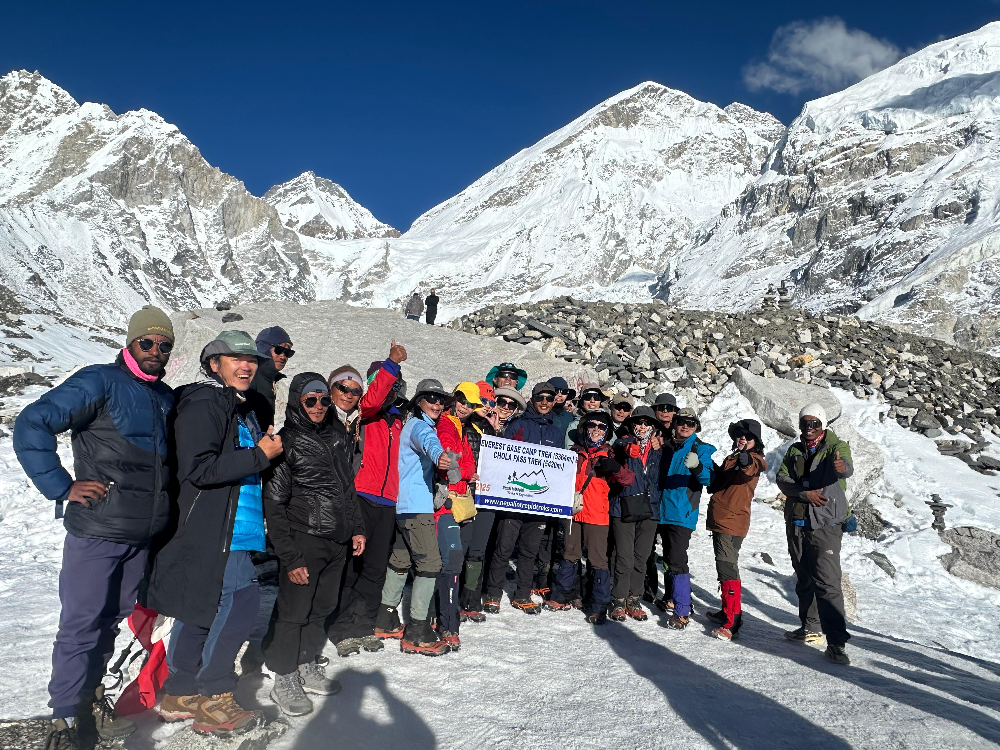
Day 19: Final departure and farewell
Kathmandu / Airport
Activity: Departure
The final day of your Everest Base Camp with Cho La Pass Trek is reserved for your departure from Nepal.
After breakfast at the hotel, you will prepare for your international journey and complete the final checkout arrangements.
The exact airport transfer timing depends on your international flight schedule. Your transportation is arranged so that you can reach the airport with appropriate time for check-in, immigration and other departure formalities.
Although this is the final day of the package, it represents the completion of a journey that began nearly three weeks earlier in Kathmandu.
Since arriving in Nepal, you have moved from the capital into the Everest region, flown to Lukla, walked through the Khumbu and progressively gained elevation through Phakding, Namche Bazaar, Tengboche, Dingboche and Lobuche.
You then entered the highest sections of the route, reached Gorak Shep and Everest Base Camp, climbed Kala Patthar and continued toward Dzongla.
The itinerary then crossed the demanding Cho La Pass before entering the Gokyo Valley.
From Gokyo, you explored the surrounding high-altitude landscape and completed the Gokyo Ri hike before beginning the descent through Dole and Namche Bazaar.
The final trekking day brought you back to Lukla, followed by the flight to Kathmandu.
The farewell day therefore closes a route that combines several of the most significant trekking environments in the Everest region.
It also provides time to complete any remaining personal arrangements before leaving Nepal.
If your international flight schedule allows, you may have some free time in Kathmandu before heading to the airport. Depending on your needs, this can be used for last-minute shopping, additional local exploration or simply rest after the trek.
Travelers completing a high-altitude trek often appreciate having a calm final morning rather than combining departure with another major activity.
The final day should therefore remain straightforward and organized.
Make sure your passport, airline documents, personal belongings and other travel essentials are packed and accessible before leaving the hotel.
Your trekking team can assist with the airport transfer and final logistics according to the confirmed departure arrangements.
The Everest Base Camp with Cho La Pass Trek ends at the airport, but the route itself has taken you through a remarkably diverse range of Himalayan landscapes.
You have experienced the lower Khumbu valleys, traditional Sherpa settlements, Buddhist monasteries, high mountain viewpoints, the Khumbu Glacier environment, Everest Base Camp, Kala Patthar, Cho La Pass and the Gokyo Lakes.
The combination of these destinations is what makes the itinerary distinct from a standard Everest Base Camp journey.
The final departure is therefore the practical conclusion of a long and demanding trekking route that connects the Everest Base Camp side of the Khumbu with Cho La and Gokyo.
As you leave Kathmandu, the mountain journey is complete, with the experience covering one continuous itinerary from the first arrival in Nepal to the final international departure.
Tailor-Made Khumbu Loop
Want to customize this 19-Day Cho La Pass itinerary?
Need extra acclimatization days in Gokyo, a helicopter flight back from Gokyo or Gorak Shep, or a private departure date? We customize routes for solo hikers, couples, and private groups.
What includes in this Everest Base Camp with Cho La Pass Trek?
The supplied standard package lists the following services. Your dated booking confirmation should specify the exact hotel, meal basis, transport arrangements, porter ratio and applicable permits.
Arrival and departure airport transfers in Kathmandu.
Two Kathmandu hotel nights, normally twin-sharing, as specified in the booking.
Scheduled domestic flights to and from Lukla; departure airport and any Ramechhap transfer arrangements to be confirmed.
A licensed English-speaking trekking guide.
Porter support according to the agreed ratio and luggage allowance.
Mountain teahouse accommodation during the trekking portion, normally twin-sharing.
Breakfast, lunch and dinner during the trekking portion.
Applicable trekking permits and local registrations specified in the booking.
Trekking staff insurance and operational support costs described in the package.
Pre-trek briefing and coordination of the standard itinerary.
What Excludes in this Everest Base Camp with Cho La Pass Trek?
International flights to and from Nepal.
Nepal visa fees, where applicable.
The trekker’s travel insurance, medical treatment and evacuation costs unless paid under their own policy or another confirmed arrangement.
Tips for guides, porters and other staff.
Personal trekking clothing and equipment, unless expressly supplied.
Hot showers, charging, Wi-Fi and other paid teahouse services.
Additional drinks, snacks and personal expenses.
Optional helicopter transfers, helicopter return and other upgrades.
Additional Kathmandu nights, extra mountain nights, transport changes and delay-related expenses outside the confirmed package.
Services, sightseeing and meals not expressly stated as included.
Booking Dates & Availability for Everest Base Camp with Cho La Pass Trek
05
AUG
Aug 5 – Aug 18, 2026
AVAILABLE
$1,499 pp
09
AUG
Aug 9 – Aug 22, 2026
AVAILABLE
$1,499 pp
13
AUG
Aug 13 – Aug 26, 2026
AVAILABLE
$1,499 pp
17
AUG
Aug 17 – Aug 30, 2026
AVAILABLE
$1,499 pp
21
AUG
Aug 21 – Sep 3, 2026
AVAILABLE
$1,499 pp
Packing List for Everest Base Camp with Cho La Pass Trek
Essential Info: Don’t have it? Rent it with us — USD 1/day per item
Printable PDF
Check off items as you pack them. Your packing state is saved automatically in your browser!
Hiking Gear (11 items)
Trekking Poles
Trail stabilizers, save those knees downhill! • 1 pair
Backpack
With porter 25–35L, going solo 40–60L • 1
Reusable Water Bottles
Hydrate — and hug at night when it’s filled with hot water! • 1
MicroSpikes
Grip it, handle icy paths like a boss • 1 pair
Trekking Boots
Boots for support, trail runners for pros • 1 pair
Headlamp
Keeps hands free — early hikes and midnight nature calls! • 1
Dry Bag / Zip-Lock Bags
Stay organized and stash the stinky • 1
Rain Cover for Backpack
Shields your bag from rain and rough rides! • 1
Sunglasses
Lose one, break one, still look cool • 2 pairs
Sun Hat / Cap
Shield your face — no one likes a sunburned selfie • 1
Packing Organizers
Tame your packing chaos like a pro-level trekker • 1
Garments (19 items)
Base Layer Set (Thermal)
A thermal hug for windy ridges • 2
Fleece / Microfiber Jacket
Like a wearable hug — light, warm, essential • 1
Quick-Dry Tees (Merino)
Sweat less, smell less, hike more • 3
Quick-Dry Pants
Dries fast — cross rivers, dodge rain • 1
Trekking Pant (Soft Shell)
Built for Nepal’s trails, tough and comfy • 1
Trekking Pant (Hard Shell)
Bring the big guns for snow and storm duty • 1
Windbreaker Jacket
Windproof your journey without packing bulk • 1
Waterproof Jacket
Because soggy trekkers aren’t happy trekkers • 1
Waterproof Pant
Wet pants? No thanks — bring these just in case • 1
Down Jacket
Your puffy cloud for chilly dawns and nights • 1
Cosy Outfit for Teahouses
Trade hiking boots for this once you’re in the teahouse • 1 set
Socks (Liner / Trekking)
Happy feet = happy trek. Bring extras! • 6 pairs
Gloves — Liner
Wear under gloves or for chilly tea stops • 1 pair
Gloves — Windproof
Block those winds sweeping down from the peaks • 1 pair
Woolen Hat
Block out wind and keep your brain warm • 1
Beanie
Extra warmth while sipping tea in the yard • 1
Neck Gaiter
Neck protector, face warmer, and style icon in one • 1
Under Garments
Laundry day is rare — pack backups! • 3
Bra
Supportive and breathable for long trail days • 3
Sleeping (5 items)
Sleeping Bag
Sleep snug — from stars to teahouse beds • 1
Sleeping Bag Liner
Add warmth and avoid funky smells • 1
Earplugs
Snorers in the next room? Problem solved • 2 sets
Travel Pillow
Nap like royalty, even in the Himalayas • 1
Eye Mask
Sun’s up? Not till you are • 1
Toiletries & Hygiene (16 items)
Microfiber Towel
Dries fast, packs light — towel off in style • 1
Toothbrush & Toothpaste
Morning breath? Not on these trails • 1 set
Wet Wipes
No shower? No problem — wipes to the rescue • 2 packs
First Aid Kit
Leeches, scrapes, bruises — be ready • 1
Sunscreen
High-altitude sun bites — lather up • 1
Blister Kit
Blisters sneak up — treat them quick • 1
Soap / Shampoo
Bucket shower? You’ll still feel fresh • 1 set
Lip Balm
Wind or sun, protect those lips • 1
Comb or Brush
Brush off the dust — hair’s still happy • 1
Period Supplies
Periods don’t pause for mountains • As needed
Nail Clippers / Tweezers
Snagged gear or sharp toenail? Clip it clean • 1
Toilet Paper
Don’t get caught short — carry your own roll • Varies
Sanitising Gel
Sanitize before snack time, at every stop • 1
Deodorant
Feel fresh, even 3 days from a shower • 1
Mirror (Optional)
For grooming or checking windburn • 1
Water Purification Tablets / Filters
Turn glacier melt into safe drinking water • 1
Electronics (9 items)
Camera
Snap yaks, peaks, and village smiles • 1
Phone
Call home, check maps, jam tunes — one device • 1
GPS Watch / Device
Track your climbs, brag later • 1
External Hard Drive
No backup, no proof — save it all • 1
Cables
Juice up your phone, cam, or headlamp • 1
Power Bank
Dead battery? This keeps you going • 1
E-Book Reader
Books in your pocket — read and relax • 1
Travel Adapter (Type D, C & M)
Stay charged across Nepal • 1
Earphones
Tunes or podcasts — your trail soundtrack • 1
Miscellaneous (10 items)
Lightweight Shoes / Sandals
Post-hike bliss — slip into comfort • 1 pair
Gaiters
Keep snow and grit out of your boots • 1 pair
Playing Cards / Card Games
Perfect for rest days or teahouse hangs • 1
Multitool
Solves (almost) everything in one flip • 1
Journal / Pen
Write. Reflect. Doodle. Dream. • 1 set
Repair Kit
Patch up gear before it falls apart • 1
Insulated Flask
Sip hot tea in icy wind like a local • 1
USD 15–20 in Nepalese Currency
Tea, snacks, or surprise tips — always handy • As needed
Snacks
Energy Bars, Protein, Trail Mix • Varies
Electrolyte Tablets or Powder
Beat cramps — fuel up with electrolytes • Varies
This packing list is a guide, not a rulebook. On the meeting day in Kathmandu we go through your gear together — anything missing you can rent from us for USD 1 a day per item, or we’ll point you to the right shop for your budget. Almost everything is available in Kathmandu, so first-time trekkers arrive light and leave prepared.
Read before you book: Everest Base Camp with Cho La Pass Trek (19 Days)
To help you decide if the Everest Base Camp Trek is for you, we have provided information on flight details, trek difficulty, and the best time to visit.
If you are still unsure if this trek is for you, then email or WhatsApp us. We will get back to you within 24 hours to answer any more questions.
0/16 read
Nice start — keep going
Accommodation on the Everest Base Camp with Cho La Pass Route
Accommodation on the Everest Base Camp with Cho La Pass Trek combines comfortable hotel stays in Kathmandu with traditional mountain teahouses throughout the Khumbu. The accommodation changes as you move from the city into increasingly remote and higher mountain settlements, with facilities becoming simpler as altitude and remoteness increase.
The package includes accommodation arranged around the trekking itinerary so that you can rest at each destination without needing to organize individual lodges along the route. In Kathmandu, you stay in a comfortable hotel environment with access to the facilities expected in a city. Once the trek begins from Lukla, the accommodation changes to local teahouses and lodges designed specifically for trekkers traveling through the Everest region.
The teahouse experience is an important part of the trek itself. Rather than staying in large conventional hotels, you spend your nights in mountain settlements where accommodation is practical, simple and closely connected with the local community.
As the route progresses from Phakding, Namche Bazaar and Tengboche toward Dingboche, Lobuche, Gorak Shep, Dzongla, Thangna and Gokyo, the environment becomes increasingly remote. Higher-altitude settlements have fewer facilities and more limited resources, so expectations should be adjusted accordingly.
The accommodation arrangement is designed to provide a dependable place to sleep, eat and recover after each trekking day while keeping you close to the route.
Kathmandu hotel accommodation
The itinerary includes hotel accommodation in Kathmandu before and after the mountain trekking section.
Your Kathmandu hotel provides a comfortable base for arrival, sightseeing, trek preparation and recovery after returning from Lukla.
The city accommodation generally provides significantly more facilities than the teahouses in the mountains. Depending on the selected hotel category and package arrangement, facilities may include private bathrooms, hot showers, Wi-Fi, electricity, restaurant services and comfortable sleeping rooms.
The Kathmandu stay is also important from a practical perspective.
Before the trek, it provides the space needed to organize your equipment, complete the final briefing and prepare for the mountain flight.
After the trek, it gives you a more comfortable environment in which to recover from the physical demands of the journey before your international departure.
The contrast between Kathmandu accommodation and high-altitude teahouses is part of the overall trekking experience.
What should you expect in an Everest teahouse?
Once you reach Lukla, most nights are spent in mountain teahouses or trekking lodges.
Teahouses are locally operated accommodation establishments that combine sleeping rooms with communal dining areas.
They are the standard form of accommodation used along the established Everest trekking routes.
The facilities are designed for trekkers rather than luxury travelers.
Rooms are generally simple and functional, providing a bed, mattress and basic bedding arrangements. In many places, rooms are twin-sharing, although the exact room arrangement depends on availability and the package booking.
The dining area is typically the warmest and most social part of the lodge, particularly in the evenings.
A central heating or stove area may provide warmth in the common room, while sleeping rooms can remain cold.
At higher elevations, the simplicity of the accommodation becomes more noticeable.
The purpose is not to replicate a city hotel.
It is to provide a practical overnight base within a remote mountain environment.
Twin-Sharing Rooms
Standard trekking accommodation is generally arranged on a twin-sharing basis.
Two trekkers normally share a room containing separate beds.
Room layouts vary between lodges, and the exact size, furniture and facilities depend on the individual property.
At lower elevations, the rooms may feel relatively comfortable.
At higher elevations, accommodation becomes increasingly basic because transporting construction materials, heating fuel and other supplies into remote settlements is difficult and expensive.
The accommodation should therefore be viewed according to its mountain setting rather than compared directly with conventional hotels in Kathmandu.
Private Rooms
Private rooms may be available at some teahouses depending on the destination, lodge capacity and season.
Availability becomes more limited at higher elevations and during busy trekking periods.
If private accommodation is important to your travel plans, it should be arranged as part of the booking process rather than assumed to be available at every overnight stop.
The package can specify whether a single room supplement applies and at which destinations private rooms are realistically available.
The higher parts of the route, especially around Lobuche, Gorak Shep, Dzongla and Thangna, can have more limited accommodation inventory.
This is one of the realities of trekking in a remote Himalayan environment.
What are the rooms and shared facilities like?
Teahouse rooms are generally designed around simplicity.
- A typical room may include:
- Two single beds
- Mattresses
- Pillows or basic bedding
- A small table or limited furniture
- Basic interior lighting
Exact room arrangements vary by lodge.
Some properties may have attached or nearby bathrooms, while others use shared facilities.
As the route climbs higher, rooms generally become more basic.
This variation is normal and reflects the remoteness of the region.
Bathroom Facilities
Bathroom arrangements vary according to altitude and individual lodge.
Lower settlements generally provide more developed facilities.
At higher elevations, shared bathrooms become increasingly common.
Hot showers may be available at some lodges for an additional charge.
The availability of hot water depends on the lodge, fuel supply, weather and altitude.
At the highest settlements, you should expect more limited shower facilities.
The practical priority becomes maintaining hygiene while conserving heat and energy.
Accommodation in Gorak Shep
Gorak Shep represents one of the most demanding accommodation environments of the trek.
At approximately 5,180 meters, it is one of the highest overnight locations on the route.
The accommodation is simple because the extreme elevation and remote location limit the availability of infrastructure and resources.
Rooms are generally basic.
Heating and hot water are limited.
Electricity may be available with restrictions or additional charges.
Wi-Fi may also be limited or subject to local conditions.
The teahouse dining area becomes particularly important because it provides a place to warm up and recover after the demanding Everest Base Camp excursion.
The overnight stay at Gorak Shep is therefore best understood as a practical high-altitude base rather than a conventional hotel experience.
Accommodation in Dzongla before Cho La
Dzongla is a remote high-altitude settlement used as the overnight base before the Cho La crossing.
The accommodation options are more limited than those available in Namche or Dingboche.
The lodge provides basic sleeping facilities and a communal dining area.
Because Dzongla is positioned close to the Cho La route, accommodation here serves an important logistical purpose.
The early start for the pass crossing is easier when the group can stay close to the approach route.
Cold temperatures are a significant consideration.
Warm clothing should remain accessible in the evening and overnight.
The focus is on eating, hydrating, resting and preparing for the next day's pass crossing.
Accommodation in Thangna after the crossing
After crossing Cho La Pass, the route continues toward Thangna, also known as Dragnak.
The accommodation here is similarly simple and designed around the requirements of high-altitude trekkers.
Arriving at Thangna marks the end of one of the hardest days of the itinerary, so the lodge becomes a place for recovery rather than extended activity.
The smaller-scale environment also reinforces the remote character of the route.
Facilities can be more limited than those found at lower elevations.
A hot meal, warm clothing and adequate rest are particularly valuable after the pass crossing.
Accommodation in Gokyo
Gokyo is one of the most distinctive overnight locations of the itinerary.
The village sits beside the Gokyo Lakes and is surrounded by high mountains and glacial terrain.
Accommodation remains teahouse based, but the setting is particularly memorable.
The lodge provides a practical base from which to explore the Gokyo area and undertake the Gokyo Ri hike.
Because Gokyo is another high-altitude settlement, facilities remain simpler than those in Kathmandu or Namche.
The village's remote location means that resources must be transported in from lower areas, affecting the availability and cost of certain services.
Private rooms, couples and single supplements
Travelers who prefer private rooms may be able to request a single supplement for destinations where single accommodation is available.
However, private rooms cannot always be guaranteed at every overnight location.
The higher the route goes, the smaller the accommodation inventory becomes.
For this reason, standard twin-sharing accommodation remains the practical basis for the package.
Accommodation for Couples
Couples traveling together can generally request a private room where availability permits.
The availability of double or twin rooms depends on the individual teahouse.
At higher elevations, the number of rooms is limited, and twin-sharing arrangements may be the most practical option.
The accommodation style remains simple regardless of whether you are traveling as a couple, with friends or individually.
Accommodation for private groups
Private trekking groups benefit from having their accommodation planned as part of the complete itinerary.
The group can be assigned rooms according to availability and the agreed package arrangement.
The guide coordinates the arrival and lodging process so that trekkers do not need to search for rooms after completing a long trekking day.
This is especially useful during the more demanding sections when arriving early enough to secure preferred accommodation becomes more important.
Luxury lodge options
The new source does not name a luxury-lodge arrangement for this 19-day route. Discuss any upgrade separately and confirm where upgraded rooms actually exist. Do not promise hotel-level comfort throughout the high pass and upper-valley stages.
Are hot showers available?
Hot showers may be available in some teahouses, particularly at lower and middle elevations.
They are generally not included as an unlimited service.
Additional charges may apply because hot water requires fuel, electricity or other resources that are more difficult to provide in remote areas.
As you move higher, hot showers become less consistently available.
Near the highest sections, it is more practical to rely on basic washing and personal hygiene arrangements.
A small pack of wet wipes or similar hygiene supplies can therefore be useful.
Electricity and Charging
Electricity availability varies throughout the route.
Namche and other larger settlements generally provide better access to charging facilities.
At higher elevations, electricity may be more limited, and charging can involve an additional fee.
Power interruptions are also possible.
You should therefore avoid assuming that every teahouse will provide unlimited access to electrical outlets.
Carrying a power bank is a practical way to maintain access to essential electronic devices.
The exact charging facilities depend on the individual lodge and current local infrastructure.
Heating and cold sleeping rooms
The communal dining room is usually the warmest area of a teahouse.
Many lodges use a central stove or heating system in the dining area, particularly during cold seasons.
Sleeping rooms are generally not heated to the same extent.
This makes warm clothing important even inside the lodge.
A fleece or insulated jacket, warm socks, thermal layers and other cold-weather clothing should therefore remain accessible after arriving at the teahouse.
Sleeping conditions at high altitude
Sleeping at high altitude can feel different from sleeping in Kathmandu.
The air is colder and drier.
Rooms can become very cold during the night.
Some trekkers also find sleep more difficult at higher elevations.
The best approach is to prepare for a simple sleeping environment.
A quality sleeping bag suitable for the expected temperatures can be particularly useful.
The exact sleeping-bag provision should follow the package inclusions.
Charging and internet availability are explained under Connectivity. The source’s room and bedding descriptions do not establish a guaranteed private room or attached bathroom for every night.
Food, Meals and Drinking Water on the Cho La Pass Route
Food is an important part of the Everest Base Camp with Cho La Pass Trek, particularly because the route combines long trekking days, substantial elevation gain and several demanding sections above 4,000 and 5,000 meters. The trekking package is arranged around regular meals throughout the journey so you can maintain energy during the day, recover after walking and remain prepared for the next stage of the route.
Meals are served primarily at the teahouses and trekking lodges along the route. Kathmandu provides a broader selection of food and dining styles, while the mountain section relies mainly on practical meals prepared at local teahouses. As you move higher into the Khumbu, menus can become more limited because food and cooking supplies need to be transported into increasingly remote settlements.
The food experience changes along with the landscape. In Kathmandu, you can choose from a wide variety of local and international dishes. In the lower Khumbu, teahouses generally offer broad trekking menus. At higher elevations around Lobuche, Gorak Shep, Dzongla, Thangna and Gokyo, choices can become simpler, while warm, filling meals become particularly valuable after long days in the cold.
The package focuses on keeping you properly fueled throughout the route rather than treating food as a separate part of the travel experience. Breakfast prepares you for the day's walk, lunch provides energy during the route and dinner supports recovery at the end of the day. Snacks, warm drinks and regular hydration can supplement the main meals as required.
Breakfast before a trekking day
Breakfast is particularly important on days involving long distances, substantial elevation gain or early starts.
A typical trekking breakfast may include items such as porridge, eggs, bread, pancakes, potatoes, noodles, Tibetan-style breads, cereals or other available dishes.
The exact selection depends on the teahouse.
On shorter trekking days, you may have more time for breakfast and a slower morning.
On demanding days such as the Everest Base Camp excursion, Kala Patthar climb or Cho La crossing, breakfast becomes part of the early preparation process.
A good breakfast should provide enough energy to begin the day without making you feel unnecessarily heavy.
Trekkers often prefer foods that are familiar and easy to digest.
Your guide can help you plan meal timing around the day's route.
Lunch on the trail
Lunch is normally taken at a teahouse or restaurant along the trekking route.
- The menu may include:
- Dal bhat
- Noodles
- Rice
- Pasta
- Soup
- Potatoes
- Vegetable dishes
- Eggs
- Tibetan-style bread
- Momos
- Sandwiches
- Other local or basic trekking meals
The selection varies by settlement.
In lower villages such as Phakding and Namche, menus may be broader.
As the route climbs toward Lobuche and Gorak Shep, food choices can become more limited.
The purpose of lunch is practical: restore energy, hydrate and prepare for the afternoon section.
On longer days, a substantial lunch can help prevent unnecessary fatigue later in the route.
Dinner after reaching the lodge
Dinner is the main recovery meal after the day's trek.
By the time you reach your overnight destination, your body has spent several hours walking, climbing and adapting to altitude.
A warm, filling dinner therefore becomes one of the most important parts of the evening routine.
Common options include rice and lentils, noodles, pasta, potatoes, soup, vegetables, eggs and other available dishes.
At higher elevations, the selection can become simpler, but the emphasis remains on warm and energy-dense food.
Dinner is also an opportunity to prepare for the following day's route.
Your guide can discuss the next morning's departure time, walking duration and expected terrain while you eat and recover.
Dal bhat and familiar teahouse meals
Dal bhat is one of the most familiar meals on trekking routes in Nepal.
It generally combines rice, lentil soup and vegetable or other side dishes.
It is popular among trekkers because it provides a substantial meal and can be replenished in many trekking lodges.
For long trekking days, a meal based around rice, lentils and vegetables can provide a practical source of carbohydrates, protein and other nutrients.
Availability and exact presentation vary from lodge to lodge.
Dal bhat is particularly useful during the middle and higher stages because it remains one of the most consistent meal options available throughout the Khumbu.
Noodles, pasta and rice dishes
Noodles, pasta and rice-based dishes are also common on the trekking route.
These meals provide convenient carbohydrate sources for trekkers engaged in prolonged physical activity.
Noodle soup can be particularly useful in cold conditions because it provides both warmth and fluids.
Pasta and rice dishes can provide a substantial lunch or dinner after several hours of walking.
The exact sauces and ingredients depend on what is available locally.
Trekkers should expect simpler preparation at higher elevations compared with restaurants in Kathmandu.
Soups at high altitude
Soup is a common part of the mountain dining experience.
Vegetable soup, garlic soup, noodle soup and other varieties can provide warmth and fluid during cold evenings.
Soup is particularly appealing in places such as Lobuche, Gorak Shep, Dzongla and Gokyo, where temperatures can drop significantly after sunset.
It can also be easier to consume when appetite is reduced.
However, soup should be viewed as food and hydration support rather than as a medical treatment for altitude sickness.
The appropriate response to significant altitude-related symptoms is proper assessment and, when required, descent or medical assistance.
Tibetan-style and local foods
The Everest region offers several local foods that are commonly available in teahouses.
Tibetan-style bread, potatoes, soups, noodles and momos can appear on menus.
Momos are dumpling-style foods available in different fillings depending on the lodge.
Local dishes add variety to the trekking diet and provide opportunities to experience food traditions associated with the Himalayan region.
The availability of specific dishes can vary significantly between lodges.
Vegetarian Meals
Vegetarian food is widely available along the Everest Base Camp route.
- Vegetarian dishes commonly include:
- Dal bhat with vegetables
- Vegetable noodles
- Vegetable fried rice
- Vegetable pasta
- Potato dishes
- Vegetable soups
- Momos
- Eggs where appropriate to your dietary preference
You should notify the trekking team of any dietary restrictions before the trek begins.
The team can help communicate your requirements to the teahouses along the route.
Vegetarian, vegan and other dietary requirements
Vegan travelers can generally request plant-based meals, but the practical options become more limited at higher elevations.
Ingredients may vary between teahouses, and some dishes that appear vegetarian can contain butter, milk, cheese or other animal-derived ingredients.
For strict vegan diets, advance communication is important.
Your trekking team can explain available options and help communicate requirements to lodge staff.
Because the route enters remote areas, bringing a small supply of preferred snacks can also provide additional flexibility.
Gluten-Free Meal Requirements
Gluten-free requirements should be communicated before departure.
Many basic foods such as rice, potatoes, vegetables and certain dal-based meals can be adapted more easily than bread, pasta or flour-based dishes.
However, strict gluten avoidance can be more complicated in a remote teahouse environment because preparation areas and ingredients may not be fully separated.
The package should therefore identify dietary requirements in advance so that the trekking team can plan accordingly.
High-Calorie Food for Long Trekking Days
The daily trekking workload increases the body's energy requirements.
Long days require meals that provide adequate calories without becoming unnecessarily difficult to digest.
Carbohydrates are an important source of energy for prolonged activity, while protein supports recovery.
- Foods commonly useful during the trek include:
- Rice
- Potatoes
- Pasta
- Noodles
- Bread
- Eggs
- Lentils
- Vegetables
- Oatmeal
- Fruit where available
- Nuts and trail snacks
The exact balance depends on individual dietary needs.
Dietary restrictions and food allergies
Any dietary restrictions should be communicated before the trek begins.
- This includes:
- Vegetarian requirements
- Vegan requirements
- Gluten-free requirements
- Food allergies
- Religious dietary restrictions
- Other specific food requirements
The more remote the destination, the more important advance notice becomes.
A wider selection of ingredients is available in Kathmandu and larger Khumbu settlements than in high-altitude villages.
Advance planning allows the trekking team to communicate requirements to the lodges.
Food Allergies
Food allergies should be communicated clearly before departure and again when required at individual lodges.
Trekkers with severe allergies should not rely solely on verbal assumptions about ingredients.
A written list can be useful.
You should also carry any essential medication required for your allergy.
Because the trek operates through multiple independently run teahouses, the level of ingredient control may differ from a modern commercial kitchen.
Drinking water and treatment
Water is available along the trekking route through a combination of lodge supplies, local sources and purchased or treated water.
The exact options vary according to location.
Trekkers should use appropriate purification methods or the water service arranged through the package.
Reusable bottles or hydration systems are practical because they reduce dependence on single-use plastic bottles.
Bottled Water
Bottled water is available at many settlements, although the price generally increases as elevation and transportation difficulty increase.
Carrying reusable bottles and using refill or purification services where appropriate can reduce both cost and waste.
You should not assume that water will be inexpensive or equally available at every stage.
The remote sections around Gorak Shep, Dzongla, Thangna and Gokyo can involve higher prices because of transportation and supply logistics.
Food Prices at Higher Elevations
Food generally becomes more expensive as you move higher.
This is not necessarily because the food itself is fundamentally different.
The main reason is transportation.
Supplies have to be brought into remote mountain settlements, often with significant logistical effort.
Fuel, food ingredients and other materials become more difficult to transport as the route gains elevation.
For this reason, personal food and drink expenses can be higher in the upper Khumbu than in Kathmandu.
The main meals included in the package should be distinguished from personal extras and additional drinks.
Treat water appropriately rather than assuming clear stream or tap water is safe. Carry enough for the planned stage, particularly on the Cho La crossing where services are limited. Discuss allergies before departure and do not assume a lodge can guarantee an allergen-free kitchen.
Eating around the long high-altitude stages
Order breakfast in advance when the guide recommends it, carry accessible snacks, and eat regular meals after arriving at the lodge. The Base Camp excursion, Kala Patthar–Dzongla day, Cho La crossing and Gokyo Ri climb all require energy. Report persistent inability to eat or drink to the guide; meal planning is part of the daily support, not a replacement for altitude assessment.
Best Time to Trek: Seasons, Mountain Views and Pass Conditions
The best time for the Everest Base Camp with Cho La Pass Trek depends on the combination of weather, trail conditions, visibility, temperature and the condition of Cho La Pass. Because this package includes not only Everest Base Camp and Kala Patthar but also a high-altitude pass crossing and the Gokyo Valley, choosing the right trekking period is particularly important.
The main trekking seasons are spring and autumn, when the Everest region generally offers more favorable conditions for long-distance trekking and high-altitude travel. Spring brings progressively warmer days, clearer mountain scenery in many periods and a gradual transition out of winter conditions. Autumn follows the monsoon season and is widely valued for its generally stable weather, cooler temperatures and strong mountain visibility.
Winter can also offer clear skies and quieter trails, but colder temperatures and snow conditions can make the high sections more demanding. The Cho La crossing is especially sensitive to snow and ice, so winter departures require greater preparation and flexibility.
The monsoon period brings warmer temperatures at lower elevations but also increased precipitation, cloud and more difficult trail conditions in parts of Nepal. The Everest region receives less monsoon rainfall than many lower parts of Nepal, but weather can still affect visibility, trail conditions and flights.
For this particular itinerary, the ideal trekking window is determined not only by the general Everest Base Camp season but also by the condition of Cho La Pass. A season that is comfortable for the lower Khumbu may not provide the same conditions on the high pass.
Spring: march to may
Spring is one of the principal trekking periods for the Everest region.
The season begins with colder conditions at higher elevations and gradually becomes warmer as April and May approach. The lower Khumbu becomes more active, while the higher sections continue to transition away from winter conditions.
For the EBC with Cho La itinerary, spring offers a combination of established trekking conditions and the opportunity to experience the changing landscape of the Khumbu.
March can still feel distinctly wintry, particularly around Gorak Shep, Kala Patthar and Cho La. Snow may remain on higher sections, and early mornings can be very cold.
As April arrives, conditions generally become more favorable for long trekking days. Daytime temperatures become more comfortable at lower and middle elevations, while the higher parts of the route remain cold.
May continues the spring season but gradually becomes warmer at lower elevations.
One of the major attractions of spring is the changing vegetation in the lower sections of the Khumbu. The trail environment can become more colorful as the season progresses, providing a contrasting landscape before you enter the barren upper valleys.
For trekkers combining EBC, Cho La and Gokyo, spring can provide a strong balance between trail accessibility, mountain scenery and increasingly comfortable walking conditions.
March Trekking Conditions
March is the beginning of the main spring trekking period but should still be treated as a transitional month.
Lower elevations can become increasingly pleasant during the day, while the upper Khumbu remains cold.
The highest sections require full cold-weather preparation.
Cho La deserves particular attention during March because snow and ice can remain on the crossing after winter.
A March departure therefore requires flexibility around the pass and appropriate equipment for potential winter-like conditions.
The advantage of early spring is that the mountain landscape can retain its winter character, particularly in the highest sections.
Trekkers who enjoy colder conditions and are prepared for potentially more demanding high-pass terrain may find this period suitable.
April Trekking Conditions
April is one of the strongest periods for the full EBC and Cho La experience.
The weather generally becomes more settled compared with the winter transition, while temperatures are increasingly manageable during the daytime.
The lower Khumbu becomes greener, while the upper regions continue to provide the dramatic high-altitude environment that defines the trek.
The route to Everest Base Camp, Kala Patthar and Gokyo can provide strong mountain views when visibility is favorable.
Cho La conditions still need to be monitored, particularly because the pass can retain snow or ice depending on the winter and current weather.
The combination of longer daylight, improving trail conditions and a strong mountain atmosphere makes April a popular period for high-altitude trekking.
May Trekking Conditions
May continues the spring trekking season and generally brings warmer conditions than earlier spring.
Lower sections of the route become increasingly comfortable for walking, while the higher Khumbu remains cold.
The mountain landscape can still provide excellent views, although conditions can become more variable as the season progresses toward the monsoon period.
The Cho La crossing remains an important factor.
Current snow and ice conditions must be assessed rather than assuming that a particular date guarantees an accessible pass.
For travelers planning the complete EBC, Cho La and Gokyo circuit, May can still provide suitable trekking conditions, provided the route is managed according to the actual weather and trail environment.
Autumn: september to november
Autumn is another principal trekking season for the Everest Base Camp with Cho La Pass Trek.
The season follows the main monsoon period and generally brings a transition toward clearer Himalayan conditions.
September can still experience residual weather effects in some periods, particularly early in the month.
October typically provides the most established autumn trekking environment, with comfortable daytime temperatures at lower and middle elevations, colder conditions at high altitude and generally good visibility during favorable weather periods.
November gradually becomes colder, particularly in the morning and evening, but can still offer strong trekking conditions.
Autumn is particularly attractive for the EBC with Cho La itinerary because the route combines long trekking distances with a high mountain pass.
Stable conditions are especially valuable when crossing Cho La and moving through the exposed high-altitude environment between Dzongla and Thangna.
September Trekking Conditions
September marks the beginning of the autumn trekking season.
Conditions can vary during the early part of the month, and residual monsoon weather may still affect some travel arrangements.
As September progresses, the weather often becomes more favorable for trekking.
The lower Khumbu begins to transition toward the clearer autumn environment, while the high mountains provide increasingly favorable opportunities for long-distance trekking.
For the Cho La section, current weather remains more important than the calendar alone.
A departure later in September generally provides a more established autumn pattern than one at the very beginning of the month.
October Trekking Conditions
October is one of the most popular periods for trekking in the Everest region.
The combination of cooler temperatures, generally favorable visibility and established trail activity makes it particularly suitable for long mountain routes.
For this package, October provides a strong opportunity to experience the entire circuit from Lukla through Everest Base Camp, Kala Patthar, Cho La, Gokyo and back toward Namche.
The lower Khumbu remains relatively comfortable during the day, while the upper Khumbu provides the cold, alpine environment expected at high altitude.
Cho La conditions still require a current assessment, but the general autumn environment can provide a favorable setting for the crossing.
November Trekking Conditions
November brings a gradual shift toward winter.
The days can remain clear and suitable for trekking, particularly earlier in the month, but temperatures become increasingly cold.
Morning starts around Gorak Shep, Kala Patthar and Cho La require particularly strong cold-weather preparation.
The later November period may feel much more wintry at higher elevations.
Trekkers choosing this month should be prepared for colder conditions and possible changes in the trail environment.
Winter: cold, snow and pass conditions
Winter transforms the Everest region into a much colder and potentially more demanding trekking environment.
The lower Khumbu can still experience sunny daytime conditions, but temperatures drop significantly at night and become particularly cold at higher elevations.
Snow can affect the upper route.
Cho La is the section that requires the most attention during winter because snow and ice can substantially change the nature of the crossing.
A winter departure therefore requires more careful equipment preparation, route monitoring and contingency planning.
The advantage of winter can be quieter trails and potentially excellent visibility during clear periods.
The disadvantage is the greater cold exposure and the increased possibility of snow-related changes.
December Trekking Conditions
December begins the winter trekking period.
Lower parts of the route can remain accessible and relatively comfortable during sunny daytime periods, but higher elevations become significantly colder.
The early-morning Kala Patthar climb can be particularly cold.
Cho La may experience substantial snow or icy conditions depending on recent weather.
Trekkers traveling in December should be prepared for genuine winter mountain conditions rather than treating the route as an extension of the autumn season.
January Trekking Conditions
January is one of the coldest periods of the year in the Everest region.
The lower Khumbu may still offer clear and sunny days, but temperatures at night can be very low.
Higher sections can contain snow and ice, and the Cho La crossing can become substantially more challenging.
A January departure therefore requires strong cold-weather equipment and greater flexibility.
The number of trekkers may be lower than during peak spring and autumn periods, creating a quieter experience.
However, the route conditions demand greater preparation.
Monsoon and shoulder-season departures
The draft describes monsoon cloud, rain and flight uncertainty, and emphasizes that lower-valley conditions do not establish whether Cho La is usable. Confirm current snow, ice, visibility and service availability for an off-season departure. A classic EBC itinerary may remain an alternative when the pass does not suit the conditions.
Choosing dates for the complete EBC, Cho La and Gokyo route
For travelers planning the complete combined route, the strongest periods are generally the established spring and autumn trekking seasons.
Within those periods, the practical choice depends on personal preferences.
Spring offers progressively warmer conditions and a changing landscape as winter recedes.
Autumn generally provides cooler conditions and a strong post-monsoon mountain environment.
Within both seasons, current weather remains more important than simply selecting a month from a calendar.
For Cho La in particular, recent snowfall and current trail conditions can affect the route even during an otherwise favorable trekking period.
Best Season for Mountain Views
Mountain visibility depends heavily on daily weather.
Clearer periods can provide expansive views toward Everest, Lhotse, Nuptse, Ama Dablam, Cho Oyu, Makalu and other surrounding peaks.
The major viewpoints of Kala Patthar and Gokyo Ri are particularly dependent on visibility because their principal attraction is the panoramic mountain landscape.
Autumn and spring are generally favored for these experiences, but no season guarantees clear skies every day.
Best season for Cho La Pass
Cho La requires a different consideration from the standard EBC trail.
The main question is not simply whether the Everest region is open for trekking.
It is whether the conditions around the pass are suitable for a safe crossing.
Snow depth, ice, visibility, temperature, wind and recent weather can all affect the crossing.
This means that the condition of Cho La should be checked shortly before the crossing rather than relying entirely on the month of departure.
Best season for first-time high-altitude trekkers
Trekkers with limited high-altitude experience may find the more established spring and autumn periods easier to manage from a logistics perspective because weather conditions are generally more predictable than during the more variable winter or monsoon periods.
However, the route remains challenging regardless of season.
A first-time high-altitude trekker still needs appropriate fitness, acclimatization and preparation.
The Cho La crossing adds an additional level of difficulty that should be considered independently from the season.
A Typical Trekking Day on the EBC with Cho La Pass Expedition
A typical day on the Everest Base Camp with Cho La Pass Trek combines an early start, several hours of walking, regular rest breaks, meals at mountain lodges, and gradual altitude gain or loss. The exact schedule changes according to the trekking stage, weather, trail conditions, distance, altitude, and the day's objective.
The lower sections around Lukla, Phakding, and Namche generally allow a more flexible rhythm, while the higher sections toward Lobuche, Gorak Shep, Everest Base Camp, Cho La Pass, and Gokyo require slower pacing and greater attention to acclimatization.
The 19-day itinerary is designed with acclimatization days at Namche, Dingboche, and Gokyo so that the trek does not consist of continuous upward movement. These rest and acclimatization periods are an important part of the overall trekking structure.
Early Morning Start
Most trekking days begin in the morning after breakfast.
The exact departure time depends on the day's distance and terrain. Shorter trekking stages may allow a relatively relaxed start, while demanding sections such as the journey toward Everest Base Camp, Kala Patthar, or the Cho La crossing generally require an earlier departure.
Starting early also provides more time to complete the day's route before afternoon weather conditions become more challenging.
Trekkers should prepare their daypack the previous evening so that the morning routine remains simple. Water, warm layers, rain protection, sunglasses, sunscreen, snacks, personal medication, camera equipment, and other frequently used items should remain easily accessible.
Morning preparation, walking and lunch
Breakfast is normally taken at the trekking lodge before departure.
Common breakfast choices include porridge, eggs, bread, pancakes, Tibetan-style bread, potatoes, cereal, tea, coffee, and other lodge-available dishes.
The choice should provide enough energy for several hours of walking without being unnecessarily heavy.
At higher elevations, appetite can sometimes decrease even though the body requires sufficient energy. Maintaining regular food and fluid intake therefore remains an important part of the daily trekking routine.
Morning Trekking Hours
The first part of the day's walk generally provides the main period of steady movement.
The guide establishes a practical pace based on the group's condition, altitude, terrain, and planned destination. On an altitude-sensitive trek, walking quickly does not necessarily provide an advantage. A controlled and sustainable pace allows trekkers to conserve energy for the later sections of the day.
The trail can alternate between gradual climbs, descents, stone steps, suspension bridges, forest paths, exposed ridges, rocky terrain, and glacial landscapes depending on the location.
Pacing at Higher Altitudes
The walking rhythm changes as the trek gains elevation.
Between Namche and Tengboche, the trail includes significant uphill and downhill sections. Around Dingboche and Lobuche, vegetation becomes increasingly sparse and the landscape more exposed. Above Lobuche, the trail enters a much colder and more rugged environment.
The pace becomes particularly important around Gorak Shep, Everest Base Camp, Kala Patthar, Cho La, and Gokyo because the air contains less available oxygen at these elevations.
The objective is to maintain a pace that allows the group to continue safely rather than treating the trek as a race.
Regular Rest Breaks
Short breaks are taken throughout the trekking day.
Breaks provide opportunities to drink water, eat snacks, adjust clothing, check equipment, and recover from uphill sections.
The frequency and duration of breaks depend on the day's terrain and altitude. Higher sections normally require more deliberate pacing and may involve additional short pauses.
Long rest periods in exposed or cold locations are generally avoided when they are unnecessary, particularly on demanding high-altitude sections.
Teahouse Lunch Break
Lunch is generally taken at a teahouse or lodge along the route.
Depending on the day's trail, the group may stop at a settlement or lodge before continuing toward the overnight destination.
Dal bhat, noodles, pasta, rice, potatoes, soups, vegetables, eggs, bread, and other trekking dishes are commonly available.
Lunch provides an important opportunity to replenish energy before the afternoon walking period.
Afternoon Trekking
After lunch, the trek continues toward the day's destination.
Afternoon walking can involve either continued ascent, gradual descent, or a combination of both.
On longer days, the group may continue for several hours after lunch. On shorter days, the afternoon may provide more time for rest, exploration of the village, photography, or preparation for the following day's journey.
The guide monitors the group throughout the afternoon and adjusts the pace when necessary.
Arrival, recovery and the evening routine
The group normally reaches the day's overnight settlement during the afternoon.
After checking into the lodge, trekkers can organize their belongings, change into warmer or more comfortable clothing, drink fluids, and rest.
At lower elevations, there may be opportunities to walk around the settlement. At higher elevations, resting and conserving energy become increasingly important.
Afternoon Rest at High Altitude
Rest becomes particularly valuable after reaching the higher settlements.
At Dingboche, Lobuche, Gorak Shep, Dzongla, Thangna, and Gokyo, trekkers are operating in a substantially different environment from Kathmandu or the lower Khumbu.
Cold temperatures, reduced oxygen availability, dry air, and demanding terrain can increase fatigue.
The afternoon after arrival is therefore generally used for recovery rather than unnecessary exertion.
Acclimatization Days
Acclimatization days have a different structure from normal trekking days.
The itinerary includes acclimatization at Namche Bazaar and Dingboche, with a dedicated Gokyo Ri day after reaching the Gokyo Valley.
An acclimatization day does not necessarily mean remaining inside the lodge all day. Short hikes to higher elevations followed by a return to the sleeping elevation can form part of the acclimatization strategy.
At Namche, the itinerary includes an excursion toward the Everest View Hotel area. At Dingboche, the itinerary includes the Nangkartshang Hill area. These excursions provide additional elevation exposure without requiring an immediate overnight stay at the higher point.
Kala Patthar, Cho La and Gokyo days
The Kala Patthar section generally begins early because the viewpoint is one of the major objectives of the Everest region itinerary.
From Gorak Shep, the trail climbs toward Kala Patthar. The ascent is demanding because it takes place at very high altitude.
The viewpoint provides an extensive panorama toward Mount Everest and surrounding peaks.
After completing the viewpoint excursion, trekkers return toward Gorak Shep and continue toward Dzongla according to the itinerary.
This creates a particularly demanding sequence because the Kala Patthar ascent is followed by continued trekking rather than returning to a lower settlement for the night.
The Cho La crossing day
The Cho La crossing requires a different daily rhythm from the standard teahouse trekking days.
The route from Dzongla toward Thangna involves a substantial high-altitude crossing at approximately 5,420 meters. Depending on conditions, the trail can include steep terrain, snow, ice, rock, and glacial surfaces.
Trekkers should leave with appropriate layers already prepared, sufficient water, snacks, and essential equipment readily accessible.
The group moves according to the slowest practical pace required by the terrain and conditions. Breaks are taken where appropriate, while exposed sections are approached carefully.
After crossing Cho La, the route continues toward Thangna for the overnight stay.
Preparing for the next day
Preparing equipment the evening before makes the following morning easier.
- Trekkers should check:
- Daypack
- Water bottles
- Warm layers
- Waterproof clothing
- Gloves
- Hat
- Sunglasses
- Headlamp
- Snacks
- Medication
- Trekking poles
- Camera and batteries
- Passport and essential documents
On the Cho La crossing day and other high-altitude days, the most important equipment should remain immediately accessible rather than buried inside the main baggage.
Permits, Local Registrations and Regulations for Cho La Pass
The source identifies Sagarmatha National Park entry, Khumbu local registration/Trek-Card and applicable TIMS/guide arrangements. These are separate requirements. Nepal Tourism Board’s published revised route list names Everest Base Camp, Gokyo and Chho La under its licensed-guide and agency-issued TIMS provisions. Confirm the documents and fees applicable to your nationality, chosen route and departure date with the operator.
What documents should be ready before leaving Kathmandu?
Before departing Kathmandu, your trekking team confirms the required documentation.
- This includes checking:
- Passport information
- Nationality
- Trekking route
- Departure dates
- Guide information
- TIMS registration
- Other applicable documentation
Keeping your details accurate at this stage helps prevent administrative problems later in the trek.
The final permit process is coordinated according to the current government procedures in effect for your departure.
What documents do you need?
Your passport is the principal document needed for trek registration and permit-related processing.
The Khumbu Pasang Lhamu Rural Municipality currently identifies a passport among the required documents for the Trek-Card service.
The trekking team may also require the information needed to complete TIMS registration, including personal and route details.
You should ensure that your passport is valid for the full duration of your travel and that the name and nationality information used during booking match the passport.
Passport copies and digital documents
It is practical to retain both a physical and digital copy of important travel documents.
- Useful records include:
- Passport identification page
- Travel insurance documentation
- Trekking booking confirmation
- Flight information
- Emergency contact details
- Permit or TIMS confirmation where applicable
Keeping digital copies provides a backup in case a paper document is lost or damaged.
The package should state which fees are included and who arranges the documents. Trekking registrations do not authorize climbing Everest or another peak, or operating a drone. Do not copy a fixed permit price or activity rule from old prose without checking the current requirement.
Altitude Progression, Acclimatization Strategy and Safety
Altitude is one of the defining characteristics of the Everest Base Camp with Cho La Pass Trek. The journey begins at approximately 1,355 meters in Kathmandu and gradually climbs through Lukla, Phakding, Namche Bazaar, Tengboche and Dingboche before entering the higher Khumbu. The route then reaches Lobuche, Gorak Shep and Everest Base Camp, followed by Kala Patthar, Dzongla, Cho La Pass and Gokyo Ri before descending through Dole and Namche toward Lukla.
The highest sections of the itinerary are above 5,000 meters, with Kala Patthar at approximately 5,545 meters, Cho La Pass at approximately 5,420 meters, Everest Base Camp at approximately 5,364 meters and Gokyo Ri at approximately 5,357 meters.
The itinerary is structured around gradual elevation gain rather than a rapid ascent. Dedicated acclimatization days in Namche Bazaar and Dingboche are incorporated before the route reaches the highest stages. During these acclimatization days, the schedule includes daytime hikes to higher elevations followed by a return to the same settlement for overnight rest.
This progression is especially important because the trek does not simply reach Everest Base Camp and descend. It continues through a high mountain pass into the Gokyo Valley, meaning that good acclimatization and careful altitude management remain important well beyond the EBC section.
Namche acclimatization and the Everest View Hotel hike
The first major acclimatization stage takes place in Namche Bazaar.
After reaching Namche from Phakding, the itinerary does not immediately continue to Tengboche or Dingboche. Instead, you remain in Namche for an additional night and complete a daytime hike toward higher ground.
The higher excursion provides exposure to an increased elevation while allowing you to return to Namche for overnight rest.
This creates an important transition between the lower Khumbu and the much higher sections of the trek.
The hike toward the Everest View Hotel and surrounding viewpoints also provides an opportunity to experience the mountain landscape from above Namche.
The focus remains on steady movement rather than speed.
You are still relatively early in the itinerary, so this stage is about preparing the body for the elevation ahead rather than exhausting yourself.
After completing the hike, you return to Namche and have the remainder of the day to rest, eat and hydrate.
Dingboche acclimatization and Nangkartshang Hill
The Dingboche acclimatization day includes a daytime hike toward Nangkartshang Hill, reaching substantially higher elevation before returning to Dingboche.
The objective is to expose your body to a higher daytime elevation while keeping your sleeping elevation unchanged.
This approach is particularly relevant before moving toward Lobuche and Gorak Shep.
The hike itself is conducted at a controlled pace.
At these elevations, speed becomes less important than maintaining a sustainable rhythm.
You should expect to take frequent breaks and allow yourself time to recover during the climb.
After reaching the planned high point, you descend to Dingboche for the night.
The rest of the day is used for food, hydration and recovery.
Why Dingboche Is Important Before Everest Base Camp
The route becomes progressively higher after Dingboche.
The next stages take you to Lobuche, Gorak Shep and Everest Base Camp, followed by Kala Patthar and Cho La.
By completing an acclimatization day in Dingboche before continuing, the itinerary creates a buffer between the moderate-high elevations of the central Khumbu and the extreme elevations of the upper route.
The purpose is not to make the high-altitude sections easy.
They remain physically demanding.
The acclimatization day simply gives your body more time to adjust before the next elevation increase.
The descent to Dzongla after Kala Patthar
The descent from Kala Patthar is an important part of the altitude strategy.
After reaching approximately 5,545 meters, the route moves back toward Dzongla at a lower elevation.
This reduces the sleeping altitude after the day's high point and allows some recovery before the Cho La crossing.
The sequence is particularly important because the trek does not finish after Kala Patthar.
The itinerary must still cross Cho La.
Dzongla and preparation for Cho La
Dzongla sits at approximately 4,830 meters and acts as the staging point for the Cho La crossing.
The elevation remains high, but the route has already introduced you to several stages above 4,500 and 5,000 meters.
This is one reason why the preceding acclimatization days and gradual ascent are important.
The Cho La crossing itself is another substantial elevation increase.
Before leaving Dzongla, the trekking team assesses the day's weather and trail conditions and prepares the group for the crossing.
Sleeping altitude after the pass and in Gokyo
Thangna is located at approximately 4,700 meters, considerably lower than the pass itself.
Reaching Thangna marks the end of the Cho La crossing day.
Although the descent reduces the elevation, you may still feel tired from the day's combination of steep climbing, high altitude and challenging terrain.
The evening is therefore focused on recovery.
Food, hydration and rest become the priorities.
The following morning, the route continues toward Gokyo.
Entering the Gokyo Valley
The route from Thangna to Gokyo is comparatively short.
Gokyo sits at approximately 4,750 meters, placing it firmly within the high-altitude environment.
The valley's glacial lakes and surrounding mountains create a different landscape from the Everest Base Camp side of the route.
Although the trekking objective changes from Cho La to Gokyo, altitude remains an important consideration.
The shorter trekking stage allows time to settle into the village and recover before the Gokyo Ri ascent.
Gokyo at high elevation
Spending a night in Gokyo provides another opportunity to adapt before the next high-altitude hike.
The village is surrounded by the Gokyo Lakes and high mountain terrain.
The air remains thin, and physical activity should still be approached carefully.
The following day includes the climb to Gokyo Ri, so the evening in Gokyo should be treated as preparation rather than an opportunity for excessive activity.
Gokyo Ri at Approximately 5,357 Meters
Gokyo Ri rises to approximately 5,357 meters.
The climb from Gokyo is another high-altitude ascent and forms one of the major viewpoints of the itinerary.
At this elevation, the climb can feel demanding despite the relatively short distance.
The route is managed through a slow and steady pace, with breaks as required.
Gokyo Ri is particularly significant because it comes after the Cho La crossing.
The itinerary therefore includes another substantial altitude gain even after completing its highest-pass section.
The viewpoint provides a broad perspective over the surrounding Himalayan landscape and Gokyo Valley.
After completing the ascent, you return to Gokyo.
Fitness supports walking endurance but does not prevent altitude illness. Report symptoms promptly, and do not continue gaining altitude when unwell. Hydration and meals support normal function but do not substitute for acclimatization or appropriate assessment. The safety section explains the response when illness develops.
Difficulty, Fitness and Physical Preparation for Cho La Pass
The Everest Base Camp with Cho La Pass Trek is a challenging high-altitude trekking package designed for travelers who want to combine the Everest Base Camp experience with the demanding crossing of Cho La Pass and the spectacular Gokyo Valley. The route involves long trekking days, significant elevation gain, steep sections, rugged mountain trails and high-altitude environments reaching above 5,000 meters.
The trek is more demanding than the standard Everest Base Camp route because the journey continues beyond Everest Base Camp and Kala Patthar to Cho La Pass before entering the Gokyo Valley. This additional section introduces steeper terrain, potentially snowy or icy conditions and another high-altitude ascent at Gokyo Ri.
The itinerary is carefully structured to build elevation progressively. Acclimatization days in Namche Bazaar and Dingboche break up the ascent and give trekkers time to adjust before reaching the highest parts of the route. The walking pace also becomes progressively slower as altitude increases, with the itinerary allowing sufficient time for rest, meals and recovery.
The difficulty of the trek comes from the combination of altitude, duration, terrain and the Cho La crossing, rather than from technical climbing requirements. Most of the route follows established Himalayan trekking trails, but the high-pass section requires greater attention to weather, footing and personal energy levels.
- Trek Difficulty at a Glance
- Trek Grade: Challenging High-Altitude Trek
- Highest Point: Approximately 5,545 m at Kala Patthar
Cho La Pass: Approximately 5,420 m
Everest Base Camp: Approximately 5,364 m
Gokyo Ri: Approximately 5,357 m
Typical Trekking Days: Approximately 3 to 8 hours of walking depending on the stage
Terrain: Rocky trails, stone paths, steep ascents and descents, glacial terrain and possible snow or ice
Physical Preparation: Good cardiovascular endurance, leg strength and trekking stamina
Experience Recommended: Previous hiking or high-altitude trekking experience is useful, particularly for Cho La
- Acclimatization: Dedicated acclimatization in Namche Bazaar and Dingboche
- Route Character: Long-distance mountain trekking with a high-pass crossing
Endurance, leg strength and balance
A good level of physical fitness is one of the most important requirements for this trek.
The route does not require technical mountaineering skills, but it does require sustained endurance over many consecutive trekking days. You should be comfortable walking for several hours on uneven terrain, climbing steadily uphill and descending for extended periods while carrying a daypack.
The physical demands increase progressively throughout the itinerary.
The earlier trekking days through Phakding and Namche allow you to establish your walking rhythm. The route then moves higher through Tengboche and Dingboche, where the thinner air begins to have a greater effect on physical performance.
The stages around Lobuche, Gorak Shep and Everest Base Camp require considerably more endurance. The Kala Patthar climb adds another high-altitude ascent, while Cho La combines high elevation with steeper and potentially more difficult terrain.
Gokyo Ri adds another high-altitude climb before the route begins its descent.
You should therefore prepare for endurance rather than speed.
The ideal preparation is the ability to walk for several hours without becoming completely exhausted. You should also be able to recover reasonably well between trekking days.
Strong legs are particularly useful because the itinerary contains repeated uphill and downhill sections. Cardiovascular fitness supports sustained walking, while leg and core strength help with balance and stability on uneven surfaces.
Fitness does not prevent altitude-related problems, but arriving in good physical condition makes it easier to manage the workload of the trek.
Physical Training Before the Trek
Preparation should begin well before your arrival in Nepal.
A progressive training routine is more useful than trying to complete one or two extremely difficult workouts shortly before departure.
Regular walking, hiking, stair climbing and cardiovascular exercise can help build the endurance needed for the route.
Long-distance hiking is particularly useful because it allows you to practice maintaining a steady pace for several hours.
Whenever possible, train on terrain that includes hills and uneven surfaces. Flat-road fitness is useful, but it does not completely replicate the repeated climbs and descents found in the Khumbu.
A practical preparation routine can include:
Long walks and hikes: Build the ability to remain active for several hours.
Hill training: Practice sustained uphill movement.
Stair climbing: Develop leg endurance for repeated climbing.
Strength training: Focus on the quadriceps, hamstrings, calves and glutes.
Core training: Improve balance and stability.
Loaded walking: Gradually become accustomed to carrying your daypack.
Recovery sessions: Allow sufficient time for the body to adapt between harder workouts.
The objective is to reach Nepal already comfortable with prolonged walking.
Your training should also include downhill movement. Many trekkers prepare heavily for climbing but underestimate the physical demand of descending steep mountain trails.
Leg Strength and Endurance
Strong legs are particularly valuable on this route.
The trek includes repeated climbs and descents, and the terrain changes constantly. Stone steps, rocky slopes and uneven surfaces can place considerable strain on the knees and quadriceps.
Exercises that strengthen the lower body can improve your ability to manage these conditions.
Useful preparation includes squats, lunges, step-ups, calf raises and controlled stair climbing.
The aim is not maximum strength. It is functional endurance.
You should be able to repeat the same basic movements throughout a long trekking day without your legs becoming exhausted early.
Downhill conditioning is equally important.
The return from Kala Patthar, the descent around Cho La and the lower Khumbu sections all include downhill terrain.
Trekking poles can provide additional support and help with balance, particularly when descending.
Cardiovascular Fitness
Cardiovascular endurance helps you maintain a sustainable walking rhythm throughout the trek.
Walking at altitude naturally increases the effort required for physical activity. A pace that feels easy in Kathmandu can feel much more demanding at 4,000 meters and above.
Regular aerobic exercise can prepare your body for prolonged effort.
Walking, hiking, cycling, running or other cardiovascular activities can contribute to this preparation.
For trekking-specific preparation, however, long walks and uphill hikes are particularly useful because they combine cardiovascular effort with the movement patterns required on the trail.
The objective is to improve endurance without arriving at the trek physically exhausted from excessive training.
Previous trekking and high-altitude experience
Previous trekking experience is useful but not an absolute requirement.
Trekkers who have completed long mountain hikes before are usually more familiar with the rhythm of walking for several consecutive days, using trekking equipment and managing fatigue.
Experience becomes particularly useful around Cho La because the route can involve steeper terrain and changing surface conditions.
That said, previous high-altitude experience does not eliminate the effects of elevation.
A trekker who has completed several mountain routes still needs to follow the acclimatization schedule and adjust the pace according to current conditions.
For first-time high-altitude trekkers, preparation and realistic expectations are especially important.
You should understand that this is a multi-day high-altitude journey rather than a series of independent day hikes.
High-altitude experience and Cho La
Although technical mountaineering experience is not the defining requirement of the trek, familiarity with high-altitude environments can be advantageous.
At elevations above 5,000 meters, physical performance changes significantly.
The Cho La crossing requires you to remain comfortable while moving slowly on steep and potentially snowy or icy terrain.
Previous experience can help you understand the importance of pacing, hydration, layering and energy management.
The guide will provide route support, but each trekker still needs to recognize personal limits and communicate clearly when something does not feel right.
Walking time, terrain and the Cho La challenge
The itinerary contains a mixture of shorter and longer trekking days.
Some stages involve approximately three to four hours of walking, while several major days require around six to eight hours.
The demanding nature of the trek comes partly from the fact that these walking days occur consecutively.
You may finish one challenging day and still need to walk again the next morning.
This makes recovery between days an important part of the overall experience.
Good preparation therefore means developing the ability to sustain effort repeatedly, not simply completing one long hike.
Terrain throughout the trek
The route passes through a wide range of terrain as it moves from the lower Khumbu toward the high mountains.
- The lower sections include:
- Forest trails
- Stone paths
- Suspension bridges
- Village paths
- River valleys
- Terraced areas
- Higher sections introduce:
- Rocky trails
- Stone steps
- Open alpine slopes
- Loose gravel
- Glacial terrain
- Steep climbs and descents
The Cho La area can also include snow or ice according to current conditions.
This variation means that your footwear needs to provide stability and comfort across multiple surfaces.
Cho La terrain and technical considerations
Cho La is the section where terrain becomes most important.
The approach to the pass includes steep ground and high-altitude conditions. Depending on weather and recent snowfall, sections may be covered by snow or become icy.
The route therefore requires more concentration than the regular village sections of the EBC trail.
The crossing does not represent technical mountaineering in the expedition sense, but it should not be underestimated.
You need to be comfortable moving slowly on uneven ground and following the guide's instructions through more difficult sections.
Depending on actual trail conditions, appropriate traction equipment may be required.
The exact equipment requirement should be determined according to current conditions rather than assumed from a fixed seasonal checklist.
Weather and Its Effect on Difficulty
Weather can substantially influence the difficulty of the route.
Clear weather generally provides better visibility and simpler walking conditions.
Snow can cover sections of the trail and alter footing.
Ice can make steep sections more difficult.
Strong wind can increase cold exposure.
Cloud can reduce visibility and make navigation more challenging.
Weather can also affect Lukla flights, creating possible changes to the transportation schedule.
The highest mountain sections are particularly sensitive to rapidly changing conditions.
For this reason, the itinerary needs practical flexibility, especially around Cho La.
Cold Temperatures at Higher Elevations
Temperature becomes another factor as the route gains altitude.
Early-morning starts, especially around Kala Patthar and Cho La, can be very cold.
You should use a proper layering system so that clothing can be adjusted according to exertion and weather.
A suitable system normally includes a moisture-managing base layer, insulating middle layer and wind or weather-resistant outer layer.
Warm gloves, a hat or thermal head covering and appropriate socks become increasingly important in the upper Khumbu.
Staying warm is not simply about comfort.
Cold conditions can affect energy levels, dexterity and overall trekking efficiency.
Is this route suitable for a first-time trekker?
The route is not an entry-level trekking package.
A reasonably fit first-time high-altitude trekker can potentially undertake the journey with proper preparation and professional trekking support, but the demands should be clearly understood before booking.
- You should be prepared for:
- Multiple consecutive trekking days
- Long walking hours
- High altitude
- Cold conditions
- Basic teahouse accommodation
- Steep climbs and descents
- Potentially difficult Cho La conditions
- The ability to follow the acclimatization plan
First-time trekkers should arrive physically prepared rather than relying on fitness developed after reaching Nepal.
Preparing for consecutive demanding days
Build walking endurance gradually, practise hills and descents, use your intended footwear and daypack, and allow recovery before travel. This route puts Base Camp, Kala Patthar, Cho La and Gokyo Ri close together in the mountain schedule. Discuss readiness, previous injuries and medical concerns individually before deciding whether it fits your experience.
Crossing Cho La Pass: The Master Tactical & Safety Guide
Cho La is the link used by this itinerary between Dzongla on the EBC side and Thangna on the Gokyo side. Day 12 is a substantial ascent, crossing and descent. It should be treated as a condition-sensitive mountain stage, not as a guaranteed sightseeing stop.
Approaching Cho La from Dzongla
The Cho La crossing begins from Dzongla, a high-altitude settlement positioned on the Everest Base Camp side of the pass.
Dzongla is intentionally used as the overnight staging point because it places you close enough to the pass for an early start while still maintaining a gradual altitude progression.
By the time you reach Dzongla, the route has already taken you through several major high-altitude stages.
You have crossed the upper Khumbu, reached Lobuche, spent a night at Gorak Shep, visited Everest Base Camp and climbed Kala Patthar.
This previous acclimatization is an important part of the pass-crossing strategy.
The morning begins early because a Cho La crossing is a substantial high-altitude day. Starting earlier provides more daylight for the route and gives the trekking team greater flexibility if the trail becomes slower than expected because of snow, ice or difficult terrain.
The exact departure time can vary according to conditions and the judgment of the guide.
The trail toward Cho La
The route from Dzongla toward Cho La gradually moves into increasingly exposed mountain terrain.
The vegetation is minimal, the trail becomes more rugged and the surrounding landscape is dominated by high mountain slopes.
The ascent is not simply a smooth climb.
Sections of the trail can be rocky and steep, and the surface may change throughout the day.
Depending on recent weather, snow can cover sections of the route, while melting and refreezing can create icy areas.
The combination of terrain and altitude means the pace naturally becomes slower.
The objective is to reach the pass safely and conserve enough energy for the descent.
Why the Cho La crossing starts early
An early start is an important part of the package experience.
High-altitude weather and trail conditions can change during the day, while a longer crossing requires sufficient daylight.
Starting early also allows the trekking team to reach the higher sections while the group's energy is at its best.
The route is not scheduled as a leisurely morning followed by an afternoon pass crossing.
Instead, the pass day is treated as a serious trekking stage with enough time allocated to the ascent, crossing and descent.
In snowy or icy conditions, early movement can also be useful because trail surfaces and visibility may change throughout the day.
The actual departure time remains flexible according to the current weather, trail condition and group readiness.
Snow, ice and the glacial section
The exact surface conditions at Cho La vary according to the season and recent weather.
Snow may be present on the upper sections, particularly during colder periods or after fresh snowfall. Other periods can reveal more rocky terrain.
Ice can also develop where snow has compacted or melted and refrozen.
These changing conditions are one reason why the pass cannot be treated as a completely standardized trail.
The trekking team assesses the route before and during the crossing and adapts the pace and equipment approach accordingly.
Current route guidance specifically identifies the Cho La crossing as a glacier and high-pass section where appropriate traction equipment may be required, with crampons and trekking poles identified for conditions involving glacier ice.
The exact equipment used for an individual departure should therefore be based on actual trail conditions rather than on a fixed assumption about every season.
The glacial section of Cho La
The upper route around Cho La can involve glacial terrain, which adds another dimension to the crossing.
Glacial surfaces can be uneven and may contain exposed rock, snow-covered sections or hard ice.
This is different from walking on ordinary dry trekking trails.
Foot placement becomes more important, particularly on steeper sections.
The guide controls the movement of the group and provides instructions for crossing more difficult sections.
You should expect this part of the route to feel slower than the village trails earlier in the itinerary.
The purpose is careful movement rather than speed.
Equipment for the crossing
Appropriate equipment contributes significantly to comfort and stability during the pass crossing.
- Essential items should include:
- Warm insulating layers
- Wind-resistant outer clothing
- A suitable pair of trekking boots
- Warm socks
- Gloves
- Head protection
- Sunglasses
- Sun protection
- Trekking poles
- Water
- Personal medication
- Headlamp for the early start
Where trail conditions require additional traction equipment, the trekking team determines what is necessary before the crossing.
Current route information specifically identifies crampons as required where glacier ice is present on the Cho La crossing.
Equipment requirements should therefore be treated as part of route management rather than a generic shopping checklist.
The Importance of Footwear
Your footwear is particularly important on Cho La.
The terrain can change from firm rock to loose gravel, snow or ice.
Your boots should already be comfortable before reaching Dzongla.
New or poorly fitted boots are a poor choice for a pass day because blisters and foot pain can significantly affect movement.
Good tread and secure ankle support are useful on uneven terrain.
Trekking poles can provide additional stability during both the ascent and descent.
Physical Effort During the Crossing
Cho La requires a combination of endurance and concentration.
The distance itself is manageable for a fit trekker, but the altitude changes the physical experience.
At over 5,000 meters, your body is operating with substantially less available oxygen than at sea level.
The result is naturally slower movement.
A climb that would normally take a short period can take significantly longer.
The pass day also comes after many days of trekking.
This means cumulative fatigue needs to be considered.
The preparation done during the earlier acclimatization days and high-altitude stages becomes important here.
Descending toward Thangna
Reaching the top does not mean the difficult part is over.
The descent from Cho La requires careful attention to footing, particularly where the surface is steep or covered with snow and ice.
Downhill walking at altitude can be physically demanding in a different way from climbing.
The legs have already worked hard during the ascent, while the descent places additional stress on the knees and thighs.
Trekking poles can provide valuable support.
The guide will maintain an appropriate pace and identify sections where additional care is required.
From Cho La toward Thangna
After crossing the pass, the trail descends toward Dragnak/Thangna, on the Gokyo side of the route.
The change in elevation provides some relief after the highest section.
The surrounding environment gradually begins to open toward the Gokyo Valley.
The route remains alpine and rugged, but the geographical character has changed.
The Everest Base Camp side is now behind you.
The Gokyo landscape lies ahead.
This transition is one of the most rewarding elements of the package because the pass is not merely a destination. It is the physical link that moves you from one major Everest trekking region into another.
Reaching Thangna after the pass
Thangna sits at approximately 4,700 meters, significantly below the pass.
Reaching the settlement marks the completion of the most demanding pass-crossing day.
The priority after arrival is recovery.
A warm meal, adequate hydration and rest are important after the physical effort.
There is no need to add unnecessary activity once the day's crossing has been completed.
The following day is considerably shorter and continues from Thangna toward Gokyo.
Energy, pace and group coordination
Cho La is not a day to conserve nothing until the final section.
You should begin the day properly fed and hydrated.
Breakfast should provide enough energy for a long morning.
Snacks can be carried for quick energy during the crossing.
Water should remain readily accessible.
Because the day's distance is manageable but the altitude is high, the main goal is to maintain steady energy rather than consuming everything early.
The guide can also organize breaks at appropriate sections.
Hydration at High Altitude
Hydration is particularly important during a demanding high-altitude day.
Cold weather can reduce the sensation of thirst, while exertion increases fluid requirements.
You should therefore drink regularly throughout the day.
Your water supply needs to be sufficient for the planned route.
Insulated containers can also help reduce the risk of water freezing during colder conditions.
The practical hydration system should be established before reaching Dzongla.
Food Before and After the Crossing
A substantial breakfast is important before leaving Dzongla.
The day's walking requires sustained energy, and there are fewer opportunities for extended meal breaks during the pass crossing.
After reaching Thangna, the emphasis moves toward recovery.
A full meal helps restore energy after the demanding day.
The following day toward Gokyo is shorter, giving you additional opportunity to recover before the next major viewpoint experience.
Managing the pace during Cho La
The pace should be slower than on lower sections of the route.
There is no benefit to rushing the ascent.
Short, consistent steps help conserve energy.
Regular pauses allow the group to regroup.
The guide can adjust the pace depending on terrain and altitude.
The objective is to keep moving while maintaining enough reserve for the complete crossing and descent.
The importance of staying with the group
Because Cho La is remote and conditions can change, the crossing should be treated as a group trekking stage.
You should not move ahead of the guide or separate yourself from the group without a clear reason.
Difficult sections require shared awareness.
If snow or visibility becomes problematic, staying within the established route and following instructions becomes particularly important.
This is one of the reasons professional guide support is valuable on a pass-crossing itinerary.
Guide Support During the Crossing
The guide's role on Cho La extends beyond navigation.
The guide helps establish the walking pace, monitors the group, assesses the trail and weather and provides direction through steeper or more difficult sections.
The guide also helps determine whether conditions remain appropriate for the planned crossing.
This is especially important because the state of the trail can differ substantially from conditions experienced earlier in the trek.
A professional approach means responding to the mountain rather than simply following the printed schedule regardless of circumstances.
What happens if weather or trail conditions deteriorate?
The pass crossing requires flexibility.
If weather, snow, ice, visibility or other conditions make the route unsafe, the trekking team can reassess the planned crossing.
A contingency decision may involve delaying the crossing, changing the route or modifying the schedule according to the circumstances.
The precise alternative depends on the actual location of the group, current trail conditions and the safe options available.
The important point for the package is that mountain safety takes priority over maintaining a fixed timetable.
What happens if Cho La is covered with snow?
Snow does not automatically mean Cho La cannot be crossed.
- The important factors include:
- Depth and condition of the snow
- Recent snowfall
- Ice formation
- Visibility
- Weather forecast
- Trail accessibility
- Group condition
- Guide assessment
Some snow conditions may be manageable with suitable equipment and route support, while heavy snowfall or unstable conditions may require a change of plan.
The decision is made according to the actual circumstances rather than by applying one fixed rule to every departure.
Does the crossing require technical climbing skills?
The draft describes Cho La as a high-pass trek rather than a summit-climbing expedition, but it also describes glacier terrain and possible snow or ice. That distinction must not be turned into an assurance that the crossing is simple or always non-technical. The guide should confirm the skills, assistance and equipment required for the actual conditions. If the route is unsafe, changing or abandoning the crossing is part of the plan.
Route Sequence, Gokyo Lakes and Alternative Itineraries
The EBC-first route direction
This itinerary follows the Everest Base Camp first, Cho La second and Gokyo third direction.
That sequence has a clear practical logic.
You first follow the established EBC route and complete the principal Everest objectives.
You then continue toward Dzongla and approach Cho La after already spending several days acclimatizing at progressively higher elevations.
Once the pass is crossed, the route descends into Gokyo.
This means the trek's two major destinations are experienced in one continuous journey rather than as disconnected excursions.
The route direction also makes the final section more gradual, because the trek begins descending after Gokyo through Dole and Namche.
The full order is: Lukla, Phakding, Namche, Tengboche, Dingboche, Lobuche, Gorak Shep and Base Camp; then Kala Patthar, Dzongla, Cho La, Thangna, Gokyo and Gokyo Ri; followed by Dole, Namche and Lukla. Transport and Kathmandu days complete the 19-day program.
Gokyo Lakes and Gokyo Ri
After Cho La, the trail descends toward the Gokyo Valley and the environment changes once again.
The Gokyo area is characterized by high mountain lakes, glacial landscapes and expansive views across the surrounding peaks. The valley provides a quieter contrast to some of the busier sections of the main Everest Base Camp trail.
Gokyo Village serves as the main settlement for this part of the trek and provides an important overnight stop after the demanding Cho La crossing.
The Gokyo Lakes are among the major attractions of the route, with the surrounding Himalayan landscape creating a completely different visual experience from the Everest Base Camp approach.
The itinerary can also include Gokyo Ri, another major viewpoint of the Everest region. The ascent provides broad mountain views and adds another significant high-altitude walking experience to the journey.
Gokyo Ri is one of the major viewpoints associated with the Gokyo Valley and is an important part of the overall experience for trekkers choosing the Cho La route.
The climb involves an additional ascent at high altitude, so it should not be viewed as a simple sightseeing stop. The value of the viewpoint comes from the combination of the climb, the surrounding glacial valley and the mountain panorama from above Gokyo.
From the Gokyo area, the trekking experience begins to shift toward the return journey. The route gradually moves back through the lower settlements and reconnects with the main Khumbu trekking corridor before continuing toward Lukla.
The Gokyo portion is already part of this package. It should not be sold as an optional extension to the same published schedule. The lake surroundings, glacier landscape and viewpoint have different conditions from the EBC approach, and another high-altitude ascent remains on Day 14.
Cho La versus the classic EBC trek
Comparison This Cho La itinerary Classic EBC route
Main objectives EBC, Kala Patthar, Cho La, Gokyo Lakes and Gokyo Ri EBC and Kala Patthar
Major pass Cho La No Cho La crossing in the ordinary route
Direction EBC first, then a connection to Gokyo Usually an out-and-back Khumbu journey
Planned duration here 19 days Varies by the chosen package
Extra demands More days, a high pass and another viewpoint ascent Sustained altitude and walking without this added crossing
Cho La versus the Everest Three Passes trek
This itinerary crosses one major pass, Cho La. The Three Passes route adds Renjo La and Kongma La, with duration and direction depending on the selected program. Those extra passes are not included in this published 19-day schedule. Choose the route around experience, time, conditions and the number of demanding crossings you want to attempt.
Alternative routes and trip extensions
Classic EBC without Cho La
The Classic Everest Base Camp Trek is the most direct alternative for travelers whose primary objective is reaching Everest Base Camp.
The route generally follows the established Lukla–Phakding–Namche–Tengboche–Dingboche–Lobuche–Gorak Shep corridor before reaching Everest Base Camp and usually Kala Patthar.
Unlike the combined itinerary, it does not require crossing Cho La or entering the Gokyo Valley.
This makes the route structurally simpler while still requiring substantial physical preparation and altitude acclimatization.
The Classic EBC option can therefore suit travelers who want the traditional Everest experience without adding the additional high-altitude circuit.
Everest Base Camp trek without Cho La
Some itineraries are specifically structured around Everest Base Camp and Kala Patthar while avoiding the Cho La crossing.
This is useful for trekkers who want to reach the major Everest destinations but are less interested in crossing a high mountain pass.
The principal advantage of this structure is route simplicity.
After the Everest Base Camp and Kala Patthar section, trekkers descend through the main Khumbu route rather than continuing toward Dzongla and Cho La.
The overall walking experience remains demanding because the trek still reaches elevations above 5,000 meters.
Gokyo-focused routes and Renjo La
The Gokyo Valley Trek is an alternative for travelers whose primary interest is the lakes, valleys, and viewpoints around Gokyo rather than Everest Base Camp.
The itinerary generally passes through Namche and enters the Gokyo Valley before reaching Gokyo and Gokyo Ri.
Compared with the combined EBC-Cho La route, this removes the Everest Base Camp section and the need to continue through the upper Khumbu toward Lobuche and Gorak Shep.
The Gokyo route can therefore provide a more focused high-altitude lake and mountain experience.
Gokyo Ri Trek
A Gokyo-centered itinerary can place greater emphasis on the Gokyo Ri viewpoint.
Gokyo Ri reaches approximately 5,357 meters and provides extensive views across the Gokyo Valley and surrounding Himalayan peaks.
Travelers interested primarily in Gokyo's mountain panorama and high-altitude lakes can select an itinerary centered on this region rather than combining both EBC and Gokyo.
The reduced number of major objectives can also simplify the route.
Gokyo and Renjo La trek
Travelers looking for a high-altitude pass and Gokyo experience without following the Everest Base Camp corridor can consider a Gokyo and Renjo La itinerary.
Renjo La provides a high mountain crossing associated with the Gokyo region and connects the Gokyo side of the Khumbu with the northern part of the circuit.
- This type of itinerary can provide:
- Gokyo Valley
- Gokyo Ri
- High-altitude pass experience
- Remote mountain landscapes
- Fewer EBC-focused trekking stages
It is a different experience from the Everest Base Camp with Cho La route because Everest Base Camp is not the central objective.
EBC and Gokyo without crossing Cho La
A combined Everest Base Camp and Gokyo itinerary does not always have to use Cho La.
Alternative route planning can use other connections or transportation arrangements depending on the itinerary design and current trail conditions.
This type of program may appeal to travelers who want to experience both EBC and Gokyo but do not want the full Cho La crossing.
However, the exact route structure must be checked carefully because the practicality of joining the two areas depends on the selected itinerary.
Shorter Everest view and panorama routes
The Everest View Trek is a shorter alternative for travelers who want to experience the Everest region without trekking all the way to Base Camp.
The route generally focuses on Namche Bazaar and nearby viewpoints such as the Everest View Hotel area.
- It offers opportunities to experience:
- Sherpa villages
- Himalayan scenery
- Namche Bazaar
- Buddhist culture
- Mountain viewpoints
without requiring the very high-altitude stages beyond Dingboche.
This makes it a substantially different trekking format from the Everest Base Camp with Cho La Pass Trek.
Everest Panorama Trek
An Everest Panorama itinerary provides a shorter introduction to the Khumbu region.
The route typically focuses on lower-altitude viewpoints and villages such as Namche and Tengboche rather than reaching Everest Base Camp, Cho La, or Gokyo.
It can be appropriate for travelers with less time who still want to experience the Everest trekking environment.
The altitude profile is significantly lower than that of the combined EBC-Cho La route.
Tengboche Trek
The Tengboche Trek is another shorter alternative within the Everest region.
Tengboche is known for its monastery, mountain setting, and panoramic views.
Travelers choosing this route can experience the middle Khumbu without continuing into the extreme high-altitude environment around Gorak Shep, Everest Base Camp, or Cho La.
This makes it particularly different in terms of altitude exposure and overall trekking commitment.
Other Nepal travel, Kathmandu nights, peak climbing or a longer pass circuit require a revised quotation and itinerary. Gokyo is already included here. Keep suitable flexibility around the return flight before fixing onward travel.
Flights to Lukla, Airport Transfers and Practical Logistics
Lukla flights and airport transfers
What is the mountain flight experience like?
The journey to Lukla provides an early introduction to the geography of the Everest region.
As the aircraft leaves the Kathmandu Valley, the landscape changes from dense urban development to increasingly rugged hills and mountain valleys.
The flight itself is only the beginning of the journey.
The larger experience comes from arriving in Lukla and immediately entering the trekking environment.
The mountain terrain that surrounds the airstrip gives you a first indication of what the next several days will involve.
After landing, there is no long road transfer to the trekking trail.
The walk begins directly from the Lukla area.
Kathmandu or Ramechhap: which airport will you use?
Ramechhap has become an important departure point for Everest-region flights during periods when flight operations are shifted away from Kathmandu.
The airport is located east of Kathmandu and requires a separate overland transfer from the Kathmandu Valley.
This creates an additional transportation stage before the mountain flight.
When your Lukla flight is scheduled from Ramechhap, the trekking team arranges the required transfer and provides an appropriate reporting time.
The purpose is to ensure that the airport transfer and flight schedule are coordinated rather than leaving trekkers to organize the connection independently.
Why the departure airport can change
The departure airport is not selected purely according to your personal preference.
- It can depend on:
- Airline scheduling
- Airport operating arrangements
- Traffic management
- Seasonal procedures
- Current aviation conditions
The trekking operator confirms the applicable departure point before the flight.
This is why package pages should avoid permanently promising that every Lukla flight will depart from one particular Kathmandu airport.
Transfer from Kathmandu to Ramechhap
When the flight is scheduled from Ramechhap, you travel from Kathmandu to the airport by road.
The transfer requires an earlier start than a conventional Kathmandu departure because of the road journey.
Your trekking team arranges the vehicle and coordinates the timing around the confirmed flight.
The exact road-transfer duration depends on traffic, road conditions, airport requirements and departure arrangements.
Ramechhap and early morning travel
Trekkers departing from Ramechhap should be prepared for an early morning transfer.
The purpose is to reach the airport with sufficient time for the flight procedures.
Your hotel may arrange an early breakfast or packed meal depending on the departure time.
The trekking team confirms these details before departure.
This transportation stage should be viewed as part of the Everest-region flight logistics rather than as an unnecessary complication.
What happens when a Lukla flight is delayed or cancelled?
A delay does not necessarily mean the trek must be cancelled.
The appropriate response depends on the length of the delay, current weather, flight availability and the effect on the trekking schedule.
Your trekking team monitors the situation and coordinates with the airline and airport according to the available options.
A short delay may simply result in a later departure.
A longer disruption may require a revised schedule.
The itinerary is therefore managed with the understanding that mountain transportation can sometimes require flexibility.
What happens if the flight is cancelled?
If a Lukla flight is cancelled because of weather or other operational circumstances, the next available option depends on the reason for the cancellation and the current flight situation.
The trekking team can coordinate rebooking and discuss practical alternatives.
Where appropriate and available, helicopter transportation may provide another option.
However, helicopter availability, weather and operating restrictions also need to be considered.
A helicopter should not be treated as an automatic replacement for every cancelled fixed-wing flight.
Why you should keep flexibility around Lukla
The Lukla flight is one of the few parts of the itinerary that depends heavily on aviation rather than ground travel.
This creates a practical scheduling consideration at both ends of the trek.
You should avoid arranging an international departure immediately after the scheduled return from Lukla without allowing reasonable flexibility.
NOTE: The output was truncated because it was too long. Use a more targeted query or a smaller range to get the information you need.
Cultural Insights of Everest Region: Sherpa Traditions and Local Experiences
The Everest Base Camp Trek is often marketed as a journey to the world's highest mountain, but anyone who spends meaningful time on the trail quickly realizes that the mountains are only half the story. The other half is the people and culture of the Khumbu.
You walk through Sherpa villages rather than empty wilderness. You sleep in family-run teahouses. You pass mani walls and prayer wheels on the trail. You enter settlements where monasteries, farms, lodges and mountain businesses exist side by side. You hear bells, see prayer flags moving in the wind and occasionally encounter monks walking between religious sites.
The Sherpa people, Tibetan Buddhist traditions, mountain architecture, monasteries and everyday village life are not decorative elements added to the Everest Base Camp route. They are part of the living cultural landscape through which you travel.
UNESCO recognizes the exceptional natural and cultural relationship of the Sagarmatha National Park and describes the Sherpa communities, their Buddhist traditions and their adaptation to the Himalayan environment as an integral part of the area's significance. (whc.unesco.org)
For us, this is one of the reasons a well-paced EBC trek should leave enough time to stop, look around and ask questions. You are not simply walking toward Base Camp. You are walking through Khumbu Sherpa country.
Who Are the Sherpa People?
The Sherpa are a Himalayan ethnic community whose traditional homeland includes the Solukhumbu region of Nepal and neighboring parts of the Himalaya. The word “Sherpa” is sometimes incorrectly used as a synonym for mountain guide or porter. That is not what it means.
Sherpa is an ethnic and cultural identity. Many Sherpa people work in trekking and mountaineering because those industries are deeply established in the Khumbu, but Sherpa communities also include farmers, lodge owners, traders, teachers, business owners, religious practitioners and people working in many professions outside the mountains.
The culture has strong historical and spiritual connections with Tibetan Buddhism, and those traditions are visible throughout the Everest region. On the EBC route, you experience that culture through:
- Villages
- Monasteries
- Prayer wheels
- Mani walls
- Chortens
- Prayer flags
- Traditional architecture
- Food
- Festivals
- Hospitality
- Local mountain livelihoods
Namche Bazaar: The Cultural and Commercial Heart of the Khumbu
Namche Bazaar is usually the first place where trekkers experience the scale of the Khumbu's mountain economy. Built into a steep mountainside, Namche combines traditional Sherpa identity with an increasingly sophisticated trekking infrastructure. You will see:
- Stone-built homes
- Prayer wheels
- Buddhist imagery
- Teahouses
- Trekking shops
- Cafés and bakeries
- Mountain equipment stores
- Local markets
- Hotels and lodges
Nepal Tourism Board describes Namche as an important Sherpa trading centre and a major stop on the Everest Base Camp route. (ntb.gov.np)
It is also an important place to slow down and observe. Watch how porters organize supplies. Observe how trekkers and locals move through the market. Visit the surrounding villages. Talk to your guide about Sherpa traditions. Namche is where the Everest Base Camp trek begins to feel culturally different from an ordinary Himalayan hike.
Khumjung and Khunde: Life Beyond the Main Trail
The Khumjung and Khunde area provides another opportunity to see a quieter side of Khumbu life. The surrounding landscape includes traditional settlements, agricultural areas, monasteries, schools and mountain views.
A common acclimatization route from Namche can take trekkers toward this area, making the cultural experience part of the acclimatization day rather than an additional excursion.
This is one of the best examples of how a properly designed itinerary can combine altitude preparation and cultural exploration. You are gaining elevation for acclimatization while also learning how communities have developed around the mountain environment.
Tengboche Monastery and Khumbu Buddhism
Among all the cultural landmarks on the Everest Base Camp route, Tengboche Monastery is probably the most famous. The monastery sits at approximately 3,860 m, surrounded by Himalayan peaks and particularly well known for its dramatic relationship with Ama Dablam. Nepal Tourism Board identifies Tengboche as an important Buddhist centre of the Khumbu and notes its association with the annual Mani Rimdu festival. (ntb.gov.np)
The monastery is part of the Nyingma tradition of Tibetan Buddhism, and religious activity continues there beyond the periods when tourists are visiting. That distinction matters. You are not entering a museum. You are entering a living religious institution.
What Happens Inside Tengboche Monastery?
Depending on the time of your visit and current monastery schedule, you may encounter monks engaged in:
- Prayer
- Chanting
- Meditation
- Religious ceremonies
- Daily monastic activities
Visitors may be able to observe some activities, but access is always subject to the monastery's rules and current religious practice. Your guide should explain:
- Whether you can enter
- Where you can sit
- Whether photography is allowed
- When you should remain silent
- When shoes should be removed
Do not treat a ceremony as a tourist performance. For the monks, it is religious practice.
Mani Walls and Prayer Stones
One of the most distinctive cultural features of the Khumbu trail is the mani wall. These walls are made from stones engraved with Buddhist prayers and sacred inscriptions. You will encounter them in villages and along sections of the trekking trail.
The traditional practice is to pass them on your left while keeping them on your right, following the clockwise direction associated with Buddhist circumambulation. Do not climb over a mani wall. Do not remove a stone. Do not rearrange the stones for a photograph. Simply walk respectfully around it.
These structures are part of the religious landscape of the Khumbu, not decorative trail markers.
Prayer Wheels Along the Trail
You will also encounter rows of prayer wheels, sometimes located beside pathways, bridges, monasteries or village entrances. Traditionally, prayer wheels are turned clockwise. The spinning movement is associated with the recitation and dissemination of Buddhist prayers.
When you encounter a line of wheels, you will often notice local residents and trekkers turning them as they pass. Follow the same clockwise direction and avoid pushing the wheel aggressively or treating it like a novelty object. A gentle turn is enough.
Chortens and Stupas
Chortens, also known in the broader Buddhist tradition as stupas, appear throughout the Khumbu. They are religious monuments rather than simple roadside decorations. You may find them:
- At village entrances
- Along mountain paths
- Near monasteries
- On ridgelines
- At memorial sites
When passing around a chorten, the traditional direction is generally clockwise. Never climb onto one for a photograph. If prayer flags or offerings are present, leave them undisturbed.
Prayer Flags and the Meaning of the Landscape
Colorful prayer flags are one of the visual symbols most associated with the Himalaya. You will see them:
- On suspension bridges
- Around monasteries
- At chortens
- On mountain ridges
- Near village entrances
The colors traditionally represent different elements and are associated with prayers being carried by the wind. They are not simply decoration. Do not remove, rearrange or use prayer flags as travel accessories.
When you see a large cluster of flags on a ridge, remember that you are looking at a religious and cultural practice not merely a photogenic viewpoint.
Buddhist Beliefs and the Mountains
The cultural landscape of the Khumbu reflects a close relationship between mountains, religion and community life. Mountains are not simply geographic objects. They can hold spiritual significance within the local worldview. This is one reason the cultural experience of the EBC trek can feel completely different from trekking through a secular wilderness landscape. You may encounter:
- Religious ceremonies
- Monks
- Prayer flags
- Sacred sites
- Blessings
- Offerings
- Mantras
- Prayer wheels
A good local guide can explain what you are seeing without turning a complex living culture into a simplified tourist story.
Sherpa Festivals in the Everest Region
The cultural calendar of the Khumbu includes important Buddhist and Sherpa festivals. One of the best known is Mani Rimdu, traditionally associated with Tengboche Monastery. The festival includes religious ceremonies, prayers and masked dances and has become one of the best-known cultural events in the Everest region. Nepal Tourism Board identifies Mani Rimdu as a major Buddhist festival associated with Tengboche. (ntb.gov.np)
Another important celebration is Dumji, a Sherpa festival observed in communities of the Everest region. Festival dates follow traditional calendars and can vary from year to year. Do not build an entire trek around a festival date without checking the current local calendar.
What Is Mani Rimdu?
Mani Rimdu is a major Buddhist festival associated with the Sherpa communities of the Khumbu and particularly with Tengboche Monastery. The celebration can include:
- Prayer ceremonies
- Monastic rituals
- Masked dances
- Religious teachings
- Community gatherings
For a visitor, it can be an extraordinary cultural experience. But the right approach is observation and respect. Do not enter restricted ceremonial areas. Do not interrupt rituals for photographs. Follow the monastery's instructions. Remember that the event is primarily religious and communal, not a show created for tourists.
Cultural Experience at Pangboche
Pangboche is another important Sherpa settlement on the EBC route. It sits deeper in the Imja Valley and gives trekkers an opportunity to observe a more traditional mountain settlement than the highly commercialized environment of Namche. The village is associated with:
- Sherpa households
- Agriculture
- Monastic traditions
- Mountain guiding
- Traditional stone architecture
The surrounding fields demonstrate how communities have historically adapted food production to short growing seasons and difficult terrain. Walking through Pangboche is an opportunity to look beyond the mountain peaks and understand what everyday life requires at almost 4,000 meters.
The Difference Between a Sherpa and a Trekking Guide
This distinction is worth understanding. A Sherpa refers to an ethnic and cultural identity. A trekking guide is a profession. A person can be Sherpa and work as a trekking guide. A guide can also come from another Nepali ethnic or regional background. Likewise, not every Sherpa person works in trekking. Using the word correctly shows respect for the community.
How Tourism Has Changed Sherpa Society
Trekking and mountaineering have transformed the Khumbu economy. Tourism has created opportunities for:
- Guiding
- Lodges
- Restaurants
- Transport
- Retail
- Education
- International business
- Expedition work
It has also brought challenges:
- Waste
- Pressure on resources
- Seasonal labor demands
- Rising costs
- Environmental pressure
- Cultural change
A responsible trekker should recognize both sides. Tourism is an important economic engine for the region, but the mountains and communities supporting it are not unlimited resources.
What Not to Do in Sherpa Villages
These are the things you should Avoid:
- Entering private homes without permission
- Taking photographs of people without asking
- Touching religious objects unnecessarily
- Climbing onto monuments
- Moving prayer flags
- Walking through agricultural fields
- Leaving rubbish
- Making fun of religious practices
- Treating children as tourist attractions
- Giving sweets indiscriminately
These may seem like small things. Respect in the mountains is mostly made up of small things.
Photography Etiquette on the EBC Trek
The Everest Base Camp Trek is incredibly photogenic, but photography needs context. Before photographing:
- A monk
- A village resident
- A child
- A religious ceremony
- A private home
ask permission.
Walk clockwise around religious structures where appropriate, keep mani walls on your right, ask before photographing people or ceremonies, and follow monastery instructions. Sherpa is an ethnic identity: it should not be used as a generic label for every guide or porter. Local festivals follow traditional calendars, so confirm dates for the year you travel.
Altitude Profile of Everest Base Camp with Cho La Pass Trek
Interactive elevation map showing daily gain and acclimatization stopping points. Switch units below to convert between meters (m) and feet (ft).
Expedition Route Information
The 19-day route commences with a scenic mountain flight to Lukla, follows the Dudh Koshi river valley up to Namche Bazaar for dedicated acclimatization (Day 5), and ascends through Tengboche and Dingboche for a second acclimatization hike to Nangkartshang Hill (5,100 m on Day 8). Continuing past Lobuche to Gorak Shep, you stand at Everest Base Camp (5,364 m on Day 10) and summit Kala Patthar (5,545 m on Day 11). The route then crosses the rugged glaciated Cho La Pass (5,420 m on Day 12) into Dragnak/Thangna, ascends Gokyo Ri (5,357 m on Day 14), and explores the sacred turquoise Gokyo Lakes before descending via Dole and Namche Bazaar back to Lukla.
Weather on the Everest Base Camp with Cho La Pass Trek
Find out the temperature ranges you will experience along the trail. Toggle between daily variation and monthly averages, and switch units below to convert between Celsius (°C) and Fahrenheit (°F).
Everest Base Camp with Cho La Pass Trek Map
Book This Trek
We offer standard group departures as well as custom private itineraries. Use the interactive Booking Calculator widget located in the sticky sidebar on the right side of this page to choose your group size and toggle options like the Helicopter return upgrade.
Once you have calculated your estimated pricing, click the Book / Inquire Now button to submit an inquiry. Our lead Himalayan coordinators will get back to you within 4 hours with availability and booking steps!
Best Himalayan Trekking Reviews
Over 15,000 adventure seekers have explored Everest, Annapurna, and Manaslu with Namaste Hiking Trek.

9 May

28 February

11 January

14 March


Frequently Asked Questions for Everest Base Camp with Cho La Pass Trek
General Information
How difficult is the Everest Base Camp with Cho La Pass Trek compared to standard EBC?
∨
The Everest Base Camp with Cho La Pass Trek is graded Demanding High-Altitude Trek, making it noticeably more challenging than the standard 14-day EBC trek. In addition to trekking to Everest Base Camp (5,364m) and climbing Kala Patthar (5,545m), you will complete a 19-day expedition (15 walking days), traverse the glaciated pass of Cho La (5,420m), navigate the rocky lateral moraine of the Ngozumpa Glacier, and summit Gokyo Ri (5,357m). It requires solid cardiovascular fitness, leg endurance, and comfort with rocky scrambling and snow/ice slopes.
Do I need technical mountaineering skills or crampons for Cho La Pass?
∨
No technical climbing or mountaineering experience is required. However, crossing Cho La Pass involves walking on snow, ice, and steep scree. We strongly recommend all trekkers carry lightweight microspikes or trekking crampons and gaiters. During early spring and late autumn, black ice forms on the glacier crossing, where microspikes provide crucial grip and confidence. Your guide will assess trail conditions and assist you every step of the way.
Why does your itinerary do Everest Base Camp first before Cho La Pass and Gokyo?
∨
Our 19-day itinerary approaches Everest Base Camp first (via Namche, Tengboche, and Dingboche) because this sequence provides progressive altitude adaptation with two dedicated acclimatization days (Namche on Day 5 at 3,443m and Dingboche on Day 8 at 4,450m). By the time you reach Dzongla to cross Cho La Pass on Day 12, your body has already safely operated above 5,000m at Everest Base Camp (Day 10) and Kala Patthar (Day 11), substantially reducing altitude risks and optimizing pass safety.
What happens if Cho La Pass is blocked by unexpected snow or blizzards?
∨
Safety is our absolute paramount priority. If severe blizzards or dangerous ice conditions make Cho La Pass impassable, our certified lead guide will execute an alternative route descending down through Pheriche and Pangboche, and looping up into the Gokyo Valley via Phortse. This ensures you still visit both Everest Base Camp and the Gokyo Lakes without taking unnecessary risks.
What permits are required for the EBC with Cho La Pass Trek?
∨
The trek requires two official permits: the Sagarmatha National Park Entry Permit (NPR 3,000 / ~USD $25) and the Khumbu Pasang Lhamu Rural Municipality Permit (NPR 3,000 / ~USD $25). Both permits are fully managed, arranged, and paid for by Namaste Hiking Trek, with all costs included in your package price.
How long is the Everest Base Camp with Cho La Pass Trek?
∨
This package is 19 calendar days from Kathmandu arrival to final departure. Days 3–17 feature 15 mountain walking days including two dedicated acclimatization days in Namche Bazaar (Day 5) and Dingboche (Day 8), an overnight stay at Dzongla (Day 11) before crossing Cho La Pass (Day 12), and exploring Gokyo Lakes and Gokyo Ri before descending via Dole.
Can I see Everest from Base Camp?
∨
Base Camp does not provide the classic unobstructed summit panorama. Kala Patthar is the main viewpoint included for the familiar Everest perspective, when conditions permit.
Can a beginner do this trek?
∨
A well-prepared beginner may be suitable. You need endurance for consecutive mountain days, realistic expectations about teahouses and cold, and a willingness to follow the acclimatization plan. Discuss your readiness with the team.
Do I need climbing experience?
∨
The standard route is a non-technical trek. It does not include rope climbing or technical glacier travel. High altitude and sustained walking still make it demanding.
Can I book a private trek or join as a solo traveler?
∨
Yes, the supplied article describes group and private guided arrangements. Confirm the price, departure status and any supplement, particularly if nobody else books the date.
When should I go?
∨
Spring and autumn are the main planning choices. Your preferred scenery, tolerance for cold, crowd preference and flight flexibility determine the most suitable departure.
Can children or older adults join?
∨
Suitability is individual. Health, preparation, previous altitude experience, ability to report symptoms and itinerary flexibility matter more than age alone. Discuss family or senior requirements before booking.
Can I add Gokyo, a peak climb or more time in Nepal?
∨
Yes, the article describes those options, but mountain extensions need a revised itinerary and peak climbs need separate climbing arrangements. Keep a flight buffer before fixed onward travel.
What is the daily hiking distance and hours during the trek to Everest Base Camp?
∨
On average, trekkers walk 5 to 7 hours per day covering approximately 10 to 15 kilometers (6-9 miles). Pacing is kept slow and steady ("Bistari Bistari") to help acclimatization.
What are the highlights of the Everest Base Camp trek (besides Everest)?
∨
Highlights include landing at Lukla Airport, exploring the vibrant Sherpa capital Namche Bazaar, visiting Tengboche Monastery, standing on Kala Patthar (5,545m) for panoramic sunrise views of Mt. Everest, and crossing high suspension bridges decorated with prayer flags.
Do I need to book the Everest Base Camp trek in advance?
∨
Yes, we strongly recommend booking 2 to 4 months in advance, especially for Spring and Autumn departures, to secure domestic flight tickets to Lukla and high-quality teahouse accommodations.
What fitness level is required for the Everest Base Camp trek?
∨
A moderate to strong level of cardiovascular fitness is recommended. Regular exercise such as stair climbing, jogging, swimming, or weekend hikes carrying a 5-7kg daypack for 2-3 months prior to your trip is ideal preparation.
Is a guide included, and what about permits?
∨
The source package includes a licensed guide and applicable permits. NTB’s published revised route list includes EBC under its guide/TIMS provisions, and Khumbu operates local registration. Confirm the exact documents in your booking.
Will I fly from Kathmandu or Ramechhap?
∨
The departure airport depends on the operating arrangements for your dates. The team should confirm the airport, pickup and transfer plan before the flight day.
What happens if the Lukla flight is delayed?
∨
The team reviews rebooking and itinerary options according to actual conditions. Extra nights or replacement transport may cost more. Confirm the delay policy and leave contingency time.
How much luggage can my porter carry?
∨
The draft describes about 20 kg per porter and a common shared arrangement for two trekkers. Confirm your personal allowance, the crew’s equipment allowance and the exact ratio in writing; do not treat the maximum as a packing target.
What should stay in my daypack?
∨
Water, snacks, warm and waterproof layers, sun protection, headlamp, essential medication, passport, money, electronics and other items you need before the next lodge. Your porter may be walking ahead.
Can I return by helicopter?
∨
A separately arranged helicopter return may shorten the descent. Confirm the price, pickup, baggage and weather backup. It does not remove the need to acclimatize on the ascent.
What should I confirm before booking?
∨
The exact itinerary, group/private basis, guide and porter arrangement, permits, flights, accommodation, meals, live price, deposit, exclusions, cancellation terms, emergency support and delay-related costs.
What is the luggage weight limit for Lukla flights?
∨
Domestic flights to Lukla strictly enforce a 15 kg (33 lbs) total weight limit per person (10 kg duffel bag + 5 kg hand carry daypack). Excess weight incurs extra charges or may be restricted.
What accommodation should I expect?
∨
Kathmandu hotels and mountain teahouses, normally twin-sharing. Facilities become more basic higher up, and a private room or attached bathroom is not guaranteed at every stop.
Are meals included, and can I eat vegetarian food?
∨
The standard source package includes breakfast, lunch and dinner during trekking. Vegetarian dishes are common. Declare allergies, vegan requirements and other restrictions beforehand; menu choice and preparation vary.
How do I manage drinking water?
∨
Use treated water and a suitable purification method. Reusable bottles are practical. Ask about local boiled or filtered water and its cost, and protect bottles from freezing higher up.
Will Wi-Fi, charging and hot showers be available?
∨
They may be available for additional fees at some lodges, but service and reliability vary. Carry a power bank and download essential information offline.
Why are there two acclimatization days?
∨
The Namche and Dingboche stops allow time to adapt and usually include a controlled hike followed by a return to the same sleeping elevation. They should not be removed simply to shorten the trip.
What if I develop altitude symptoms?
∨
Tell your guide immediately and do not continue ascending with symptoms. The response may include rest, assessment, descent and medical care. Severe or worsening symptoms need urgent help.
What insurance should I arrange?
∨
Check that your policy covers the actual planned trekking altitude, medical treatment and appropriate helicopter evacuation. Review exclusions, pre-existing conditions and the authorization procedure directly with your insurer.
Is helicopter evacuation guaranteed?
∨
No. Medical need, weather, daylight, aircraft availability and suitable landing conditions affect evacuation. Insurance coverage does not guarantee an aircraft can operate immediately.
How should I handle cash and tipping?
∨
Prepare Nepali rupees in Kathmandu, with smaller notes and an emergency reserve. Ask for current crew tipping guidance and clarify group distribution. Mountain ATMs and card payments should not be your main plan.
What extra personal expenses should I budget for?
∨
You should budget $15 to $25 USD per day for personal items such as device charging ($2-$5), hot showers ($3-$5), Wi-Fi scratch cards ($3-$5), soft drinks/snacks, and guide/porter tipping.
How much deposit is required to confirm booking?
∨
We require a 20% advance deposit to secure your flights, permits, and guides. The remaining balance can be paid upon arrival in Kathmandu via cash (USD/NPR) or credit card.
What cultural customs should I observe in the Khumbu region?
∨
Always pass mani stones, chortens, and prayer wheels clockwise (keeping them on your right). Remove shoes before entering Buddhist monasteries, ask permission before taking photos of locals, and greet people with "Namaste".